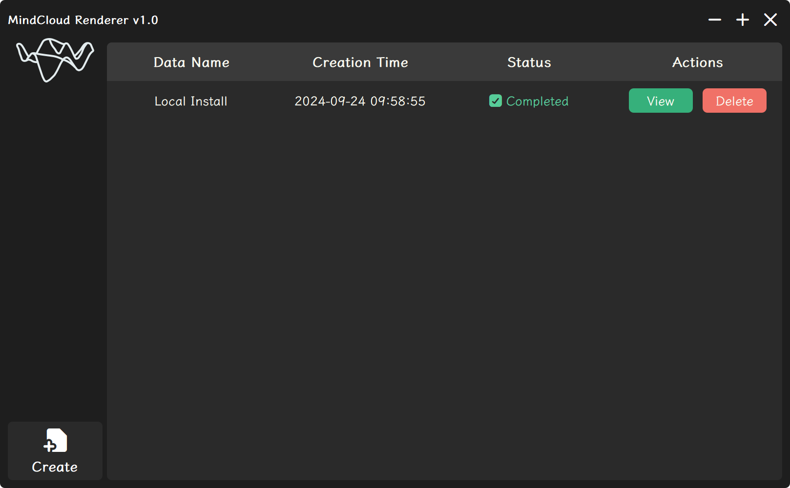

前言
怎么样从一个Python脚本一步一步变成一个可以在多平台上独立使用的App呢？
在这一部分之前，是改进和优化Python的训练脚本，其中涉及到很多知识点，也有很多心得和体悟，这些需要之后总结补充。
不记录，肯定是会忘记的，以前干了很多次这样的事，到最后就只剩下一个标题，内容啥的完全想不起来了，所以要实时记录，时常温习。
教，也是一种学习；输出，温故而知新。

整体感受
想要把一个Python的脚本转换成一个App，比如在Windows平台上双击即可使用的exe程序，怎么做呢？
- 首先，应该是有成熟的工具可以直接使用的，所以先收集信息看看有哪些，做一个整体的了解；
- 然后，做成App后，需要有交互，并且是基于图形界面的交互（GUI），因此就不能再是简单粗暴的命令行传递参数了；
- 再者，在设计时，要考虑美观，也要考虑用户体验，因此有很多细节上的需要注意，同时很多功能逻辑上的严谨也需要顾及；
这么来看，在一开始想做的时候，心里大概是有一个数的，知道一步一步分解之后需要怎么做，也能够凭借已有的经验来预估哪些逻辑需要设计，从这一点呢，其实也能学到一个好用的技巧（虽然这个道理以前就已经知道了）：
- 拿一张白纸或者一面白板，一步一步写列出思路和提纲，具体往后做的时候就不怕自己脑子里给忘掉了；
- 而且一旦有灵感之后，还能直接补充到这个白纸或者白板上，有时候就需要这种外置的记忆，想到了就记下来很重要；
- 不应该纠结于工具本身，而应该落实在具体的做上面；
- 一次性想明白所有当然是最好的，但更多的时候可能是，一边做，一边更新迭代。
那现在开始做吧！
工具篇
Windows上的CMake编译
好像是晕到死（Windows）要配合Visual Studio开发打包，但我就是不信这个邪，因为在Linux平台上就是一行命令就能解决的事，凭啥到Windows上要搞一套臃肿的软件呢？！
确实，想要在Windows上实现cmake+make，很难，但不是不可能！
首先也是收集了一些信息：
在Windows上使用 CMake 和 make 通常比在Linux上更复杂，这是由于两者的架构和工具链有根本性的差异。以下是Windows与Linux在构建系统方面的不同之处，以及为什么在Windows上不能像在Linux上直接运行
cmake和make。1. 工具链的差异
Linux：Linux系统有一个非常标准化的开发环境，几乎所有发行版都预装了GNU工具链，包括
gcc编译器和make构建工具。因此，开发人员只需要安装一些基本的开发工具包（如build-essential）即可轻松编译C/C++程序。CMake作为跨平台的构建系统，能生成Makefile，然后通过make工具来进行编译、链接等任务。Windows：Windows系统没有预装类似于Linux的GNU工具链，而是主要依赖于Microsoft Visual Studio 和 MSVC 编译器（Microsoft Visual C++）。Windows的开发环境与Linux存在本质区别，没有默认的标准构建工具如
make。因此，要在Windows上使用CMake生成和构建项目，通常需要依赖Visual Studio或第三方工具。2. CMake 与 Make 的工作原理
- CMake 是一个跨平台的构建系统生成工具，但它本身并不执行编译或构建工作。CMake 的任务是根据项目配置文件（
CMakeLists.txt）生成相应平台的构建文件，例如：
- Linux：CMake 通常生成
Makefile，然后通过make进行构建。- Windows：CMake 通常生成 Visual Studio项目文件 或 NMake Makefiles。Visual Studio 是 Windows 上常用的编译器和构建环境，NMake 是Windows下的一种
make工具，虽然和GNUmake不完全兼容，但功能类似。因此，CMake 在Windows上默认生成Visual Studio解决方案文件 (
.sln) 或者NMake Makefiles，而不是传统的GNUMakefile。3. 编译器的差异
Linux：Linux系统广泛使用GNU编译器（
gcc、g++）和clang，并且这些工具能够直接与make等构建工具配合工作。编译器和构建工具可以通过统一的方式来调用，CMake也支持生成Makefile并与gcc配合使用。Windows：Windows的默认编译器是 MSVC，它的命令行工具（如
cl.exe、link.exe）与GNU工具链有较大区别。Windows上并没有内置的gcc或clang，这意味着如果不使用Visual Studio，开发人员需要手动安装并配置编译器（如 MinGW-w64 或 Cygwin）和构建工具（如 MSYS2）来提供GNU工具链的支持。4. Make 与 NMake 的区别
- GNU Make：这是Linux上的默认构建工具，结合
Makefile进行依赖管理和构建过程。它与GNU工具链高度集成。- NMake：这是微软提供的
make工具，专为Windows开发环境设计，通常与MSVC配合使用。虽然NMake的基本功能类似于GNU Make，但它的语法和行为与GNU Make有所不同，NMake不能直接使用GNU风格的Makefile。5. 跨平台兼容工具
如果不想使用Visual Studio，可以在Windows上通过安装GNU工具链来实现类似Linux的构建体验：
- MinGW-w64：提供了Windows上的GNU编译工具链（
gcc和g++），并且能够与CMake配合使用生成 GNUMakefile，然后可以使用make进行构建。MinGW-w64 使你可以在Windows上使用类似Linux的编译环境。- MSYS2：这是一个兼容性更强的环境，基于MinGW和Cygwin，允许在Windows上运行许多Linux工具，包括
bash、gcc、make等。MSYS2提供了一个接近Linux的终端环境，可以通过CMake生成GNUMakefile，然后使用GNUmake来编译项目。- Cygwin：Cygwin 提供了类似于Linux的环境，支持使用
gcc和make进行开发，但其模拟层较重，性能不如MinGW，并且有时会引入一些额外的兼容性问题。6. Windows Subsystem for Linux (WSL)
Windows Subsystem for Linux (WSL) 提供了一个原生的Linux子系统，允许在Windows上运行Linux二进制程序。你可以在WSL中直接使用
CMake和make，因为WSL是一个完整的Linux环境，使用Ubuntu等发行版，你可以完全按照Linux的开发流程进行操作，而无需安装Visual Studio或其他工具链。使用WSL的步骤：
- 安装WSL和Linux发行版（如Ubuntu）。
- 在WSL中安装
build-essential包，包含gcc、make等工具。- 在WSL中运行
cmake和make完成项目的构建。7. 不用Visual Studio可以吗？
- 答案是可以，但需要选择合适的工具链。你可以通过以下方式在Windows上避免使用Visual Studio：
- 使用MinGW-w64 或 MSYS2 来提供GNU工具链，配合CMake生成GNU
Makefile，然后使用make进行编译。- 使用WSL，直接在Windows中运行Linux的CMake和Make工具。
- 使用NMake，如果仍然想使用MSVC编译器，但不希望依赖Visual Studio IDE，CMake也可以生成适用于NMake的Makefile。
8. 总结
- Windows和Linux在构建系统上的差异主要体现在工具链和编译器上。Linux拥有标准的GNU工具链和
make，而Windows默认使用Visual Studio和MSVC编译器，导致在Windows上开发时，通常需要依赖Visual Studio或其他第三方工具。- 如果你不想使用Visual Studio，可以通过安装MinGW-w64、MSYS2、Cygwin或WSL来获得类似于Linux的开发体验，在Windows上直接使用
cmake和make。
实际尝试后发现：
- MSYS2是个好东西，通过设置Path可以在PowerShell中使用，但单独使用MSYS2自带的终端会更好用，因为完全是类Unix风格；
- MSYS2安装的时候应该是自带MinGW的；
- MinGW也能单独安装，但好像安装完不知道咋用才好。
用到最后发现核心是这两句：
cmake -DCMAKE_PREFIX_PATH="C:/msys64/mingw64" -G "MinGW Makefiles" .. -Wno-dev
mingw32-make
以及对于各种依赖和安装包，可以通过pacman来安装，这个其实就是arch linux上面那套，虽然可能没有apt那么完全。
然后，我发现今天新点亮了一颗技能点，就是在使用搜索时，可以同时回答中英文，甚至加上一些调皮的话，比如下面这样的：
Got it! Let’s create a detailed guide on using MSYS2 and pacman, which will include the steps for setting up the environment and using pacman to install dependencies efficiently. I’ll provide the instructions in both English and Chinese for each step, as requested. 😊
Using MSYS2 and Pacman for Installing Dependencies
在 MSYS2 中使用 Pacman 安装依赖
1. Introduction to MSYS2 and Pacman
MSYS2 和 Pacman 介绍
MSYS2 is a powerful platform that brings a Unix-like environment to Windows. It provides a complete package management system through pacman (the same package manager used in Arch Linux) to install and manage software and libraries easily.
MSYS2 是一个强大的平台，它为 Windows 带来了类似 Unix 的环境。它通过 pacman 提供了一个完整的包管理系统（与 Arch Linux 相同的包管理工具），可以轻松安装和管理软件和库。
Pacman allows you to quickly install packages and manage dependencies. Instead of manually compiling software from source, you can use
pacmanto install pre-built binaries, making the setup process much smoother.Pacman 允许你快速安装软件包并管理依赖项。与手动从源代码编译软件相比，你可以使用
pacman安装预编译的二进制文件，这使得设置过程更加顺畅。2. Step-by-Step Installation and Setup
分步安装和设置
2.1 Download and Install MSYS2
下载并安装 MSYS2
Go to the official MSYS2 website and download the installer for Windows.
访问 MSYS2 官网 并下载适用于 Windows 的安装程序。Run the installer and follow the default installation path (
C:\msys64is recommended).
运行安装程序，并选择默认的安装路径（推荐使用C:\msys64）。2.2 Update Pacman and System
更新 Pacman 和系统
After installation, you need to update the package database and core packages to ensure you’re working with the latest versions.
安装完成后，需要更新包数据库和核心包，以确保你使用的是最新版本。
Open MSYS2 (either from the Start menu or from the installation folder).
打开 MSYS2（可以通过开始菜单或从安装文件夹打开）。Run the following command to update the package database and the core system:
运行以下命令以更新包数据库和核心系统：pacman -SyuYou may need to close and reopen MSYS2 to continue the update.
你可能需要关闭并重新打开 MSYS2 来继续更新。After reopening, run the update again to ensure everything is up to date:
重新打开后，再次运行更新命令以确保所有内容都是最新的：pacman -Su2.3 Install Essential Development Tools
安装必要的开发工具
You can install key development tools like GCC, G++, make, and CMake using pacman.
你可以通过 pacman 安装关键的开发工具，如 GCC、G++、make 和 CMake。
To install the 64-bit toolchain (for compiling 64-bit applications):
安装 64 位工具链（用于编译 64 位应用程序）：pacman -S mingw-w64-x86_64-toolchainTo install CMake (a common build system generator):
安装 CMake（一个常用的构建系统生成器）：pacman -S mingw-w64-x86_64-cmakeTo install other useful tools (such as Git or Python):
安装其他有用的工具（如 Git 或 Python）：pacman -S git python2.4 Using Pacman to Search and Install Packages
使用 Pacman 搜索并安装软件包
To search for a package:
搜索软件包：pacman -Ss <package-name>Example:
例如：pacman -Ss cmakeTo install a package:
安装软件包：pacman -S <package-name>Example:
例如：pacman -S mingw-w64-x86_64-cmakeTo remove a package:
删除软件包：pacman -R <package-name>2.5 Check Installed Packages
检查已安装的软件包
To list all installed packages, run:
要列出所有已安装的软件包，运行：pacman -Q2.6 Compiling Code Using MinGW in MSYS2
在 MSYS2 中使用 MinGW 编译代码
Once you’ve installed the MinGW toolchain, you can compile C/C++ code using the standard tools like
gccandg++.
一旦你安装了 MinGW 工具链，你就可以使用gcc和g++等标准工具编译 C/C++ 代码。
To compile a C++ file:
编译 C++ 文件：g++ -o output main.cppTo use CMake for a project:
使用 CMake 进行项目构建：mkdir build cd build cmake -G "MSYS Makefiles" .. make2.7 Using MSYS2 Shells
使用 MSYS2 Shell
MSYS2 provides different shells for different purposes. The most common shells are:
- MSYS2 Shell: For using Unix-like tools but not for compiling Windows applications.
- MinGW 64-bit Shell: For compiling 64-bit Windows applications using MinGW-w64.
- MinGW 32-bit Shell: For compiling 32-bit Windows applications.
MSYS2 提供了不同用途的 Shell。常见的 Shell 有：
- MSYS2 Shell：用于使用类 Unix 工具，但不适合编译 Windows 应用程序。
- MinGW 64-bit Shell：用于使用 MinGW-w64 编译 64 位 Windows 应用程序。
- MinGW 32-bit Shell：用于编译 32 位 Windows 应用程序。
Make sure you open the correct shell depending on what you’re building.
确保你根据要构建的内容打开正确的 Shell。
3. Conclusion
总结
MSYS2 combined with pacman provides a powerful and convenient development environment on Windows, bringing the simplicity of package management and tool installation from Linux-like systems. By using pacman, you can quickly install dependencies and libraries without the need to manually compile them from source unless absolutely necessary.
MSYS2 与 pacman 相结合，为 Windows 提供了一个强大且方便的开发环境，带来了类似 Linux 系统的包管理和工具安装的简便性。通过使用 pacman，你可以快速安装依赖和库，除非万不得已，否则不需要手动从源代码编译。
With this guide, you should now be able to install and configure MSYS2, use pacman to manage packages, and set up a working development environment.
通过本指南，你现在应该能够安装和配置 MSYS2，使用 pacman 管理软件包，并设置一个可用的开发环境。
That’s it! 🎉 I hope the bilingual style helps you with both your development and language learning.
总的来说结合使用MSYS2，MinGW，pacman这些，是可以不依赖Visual Studio来实现exe的编译。
其实一开始也遇到很多小问题，比如没有PCL库，然后PCL又依赖各种库，一开始的想法就是各种尝试嘛，甚至想到了手动安装，然后手动编译安装也是一个巨大的坑啊，后来是配合pacman一起服用了，虽然不及apt那么强大，但至少常用的库都有的，然后再编译需要的库就会顺畅很多。
Python打包exe
理论上讲，应该是有直接将Python打包成exe程序的工具的，所以我的第一想法是先收集一些信息，比如得到下面这些：
将Python打包成exe可执行文件的常见需求是为了将Python项目分发给没有Python环境的用户。以下是几种常用的打包工具，并且每种工具都有其优势和适用场景。
1. PyInstaller
- 优势：最广泛使用的Python打包工具之一，支持多平台（Windows、Linux、Mac），能够将整个Python项目及其依赖包打包为一个单独的可执行文件。
- 安装：
pip install pyinstaller- 使用：
pyinstaller --onefile your_script.py--onefile参数会将所有依赖打包到一个可执行文件中。生成的exe文件通常位于dist/文件夹中。- 优点：
- 支持多平台。
- 配置灵活，可以指定隐藏控制台窗口（通过
--noconsole），或者包含额外的资源文件。- 缺点：
- 打包后文件较大，因为会打包所有依赖。
- 对于动态加载的模块或资源文件，需要额外配置。
2. cx_Freeze
- 优势：与PyInstaller类似，支持多平台打包，尤其适合需要将Python程序打包为Windows可执行文件的场景。它更注重跨平台的兼容性和可扩展性。
- 安装：
pip install cx-Freeze- 使用： 需要编写一个
setup.py文件来定义打包配置：然后运行：from cx_Freeze import setup, Executable setup( name="your_app_name", version="1.0", description="Description of your app", executables=[Executable("your_script.py")] )python setup.py build- 优点：
- 比PyInstaller更灵活，适合复杂项目。
- 支持不同的目标平台。
- 缺点：
- 配置复杂度较高。
- 需要手动设置依赖项。
3. Py2exe
- 优势：专为Windows平台开发的工具，可以将Python程序打包成Windows可执行文件。
- 安装：
pip install py2exe- 使用： 同样需要编写
setup.py：然后运行：from distutils.core import setup import py2exe setup(console=['your_script.py'])python setup.py py2exe- 优点：
- 针对Windows进行优化，适合Windows应用程序。
- 缺点：
- 仅支持Windows。
- 相对较旧，不如PyInstaller和cx_Freeze活跃。
4. Nuitka
- 优势：除了打包功能外，Nuitka还将Python代码编译为C代码，生成的可执行文件通常比PyInstaller和cx_Freeze生成的要小，并且在运行时性能更好。
- 安装：
pip install nuitka- 使用：
nuitka --standalone --onefile your_script.py- 优点：
- 生成的可执行文件运行效率更高。
- 文件大小较小。
- 缺点：
- 对于依赖复杂的项目，需要更多的配置。
- 打包速度较慢。
5. PyOxidizer
- 优势：较新的工具，强调快速的启动时间和轻量级的打包结果。可以将Python解释器和应用程序一起打包，并且支持创建独立的Rust二进制文件。
- 安装：可以通过Rust的包管理工具
cargo安装：cargo install pyoxidizer- 使用： 编写一个
pyoxidizer.bzl配置文件，并运行pyoxidizer命令。- 优点：
- 能够打包出更小、更快的可执行文件。
- 缺点：
- 需要学习Rust工具链的基础。
- 生态不如PyInstaller和cx_Freeze成熟。
6. Briefcase
- 优势：是BeeWare项目的一部分，支持跨平台打包，并且能够将Python应用打包为原生平台应用（例如：Windows的exe，macOS的.dmg，甚至是Android和iOS应用）。
- 安装：
pip install briefcase- 使用：
briefcase create briefcase build briefcase run- 优点：
- 支持多种平台打包。
- 非常适合开发桌面应用。
- 缺点：
- 主要用于GUI应用，命令行工具的打包支持较弱。
总结
- PyInstaller 是目前最流行和最通用的选择，尤其适合跨平台和快速开发需求。
- cx_Freeze 提供了更多的灵活性和跨平台兼容性，但需要更多的配置。
- Nuitka 则更适合追求性能优化的场景，生成的文件更小。
- Py2exe 是Windows专用的工具，适合Windows平台开发者。
- PyOxidizer 和 Briefcase 则是一些新兴的工具，适合对性能和特定平台有特殊需求的场景。
根据你的需求，可以选择最合适的工具进行打包。如果你需要灵活且简单的方案，PyInstaller 是推荐的首选。如果你对文件大小和执行效率有要求，可以考虑 Nuitka。
搜索之后，大致有了了解，就可以开始尝试了，看着比较简单的是：cx_Freeze，于是就先试了它，采取什么策略来尝试呢？
比如，从最小可实现的方式出发吧，调用opencv读取图像并显示出来。尝试可行，似乎路能走通，并且发现了一些在Windows开发的一些规律：
- exe点击运行后都是通过
.dll方式来找需要的依赖（动态链接库），如果没有就会出错 - 如果程序一打开就崩溃了，第一想到是不是链接库没有（这里想到小时候玩的盗版游戏，打不开游戏到网上找一找原因，或者是不是程序自己弹出来缺少哪个
.dll，这时候再去下载一个放进文件夹）
在这个过程中，也摸索到了怎么来排查.dll缺失的问题，简单来说就是先看少哪个，少了那就复制过去，但怎么排查呢？也是有工具能直接用的，我还是采用先收集信息再尝试的策略
cx_Freeze本身是可以用的，但是后来，我产生了一个不成熟的需求：
能不能将所有的dll和exe一起打包成一个独立exe文件？
尝试cx_Freeze发现似乎不太行，所以后面就转战了PyInstaller，但是实际用起来，PyInstaller要更好用一些，**因为可以设定的参数更详细，**原本我以为就是命令行参数的输入那么简单，后来因为想到：这种打包工具，应该是有专门的配置文件可以设置的吧？于是就摸清楚了流程。而且如果带着问题和需求出发，可以设置的选项还有很多，比如：
- 手动选择哪些dll是额外打包的
- 是否要显示终端（在cx_Freeze中叫做Win32GUI，显示终端配合打印语句，可以调试；同样，如果想要去除终端创建，那么一定不能出现打印输出到终端）
- 配置图标，版本信息等等等
实际使用的例子
对于cx_Freeze可以使用install_exe.py写一个打包配置：
from cx_Freeze import setup, Executable
import os
# 额外的ddl文件
extra_dll_files = [
('extra_dll/libomp140.x86_64.dll', 'libomp140.x86_64.dll'),
('extra_dll/libomp140d.x86_64.dll', 'libomp140d.x86_64.dll')
]
# 合并所有需要包含的文件
include_files = extra_dll_files
# 添加打包选项
options = {
'build_exe': {
'build_exe': 'mt3d_2.0',
'include_files': include_files,
'include_msvcr': True # 包含 Microsoft Visual C++ 运行时库
}
}
# 配置可执行文件
executables = [
Executable('main.py', base='Win32GUI', target_name='mt3d.exe')
]
# 设置打包
setup(
name='MT3D',
version='1.0',
description='Manifold Tech Limited 3D Rendererer',
options=options,
executables=executables
)
实际运行就是：
python .\install_exe.py build
而对于PyInstaller，则可以使用更复杂的配置文件，比如install.spec，这个spec文件本质上也可以看作是Python文件：
# -*- mode: python ; coding: utf-8 -*-
import os
# 其他额外考虑的dll文件
extra_dll_files = [
(os.path.abspath('extra_dll/libomp140.x86_64.dll'), '.'), # 这里的 '.' 表示目标路径是打包后的根目录
(os.path.abspath('extra_dll/libomp140d.x86_64.dll'), '.'),
]
pre_run_pkg_path = os.path.abspath('PreOps')
pre_run_dlls = [(os.path.join(pre_run_pkg_path, dll), '.') for dll in os.listdir(pre_run_pkg_path) if dll.endswith('.dll')]
exe_files = [
('PreOps.exe', '.')
]
# 设置附加文件
binaries = extra_dll_files + pre_run_dlls + exe_files
# 定义 assets 文件夹的路径
assets_dir = os.path.abspath('assets')
# 遍历 assets 目录及其子目录
data_files = []
for root, dirs, files in os.walk(assets_dir):
for file in files:
# 获取文件的绝对路径
file_path = os.path.join(root, file)
# 在打包时，将文件放入 assets 文件夹内保持层次结构
target_path = os.path.join('assets', os.path.relpath(root, assets_dir))
# 将每个文件的源路径和目标路径添加到 data_files 列表
data_files.append((file_path, target_path))
# 定义 lib 文件夹的路径（包含 .js 文件）
lib_dir = os.path.abspath('lib')
# 遍历 lib 目录及其子目录
for root, dirs, files in os.walk(lib_dir):
for file in files:
# 获取文件的绝对路径
file_path = os.path.join(root, file)
# 在打包时，将文件放入 lib 文件夹内保持层次结构
target_path = os.path.join('lib', os.path.relpath(root, lib_dir))
# 将每个文件的源路径和目标路径添加到 data_files 列表
data_files.append((file_path, target_path))
block_cipher = None
# EXE 配置
a = Analysis(
['train.py'],
pathex=['.'],
binaries=binaries,
datas=data_files,
hiddenimports=[],
hookspath=[],
runtime_hooks=[],
excludes=[],
win_no_prefer_redirects=False,
win_private_assemblies=False,
cipher=block_cipher,
noarchive=False,
)
# PYZ 配置
pyz = PYZ(a.pure, a.zipped_data, cipher=block_cipher)
# EXE 配置
exe = EXE(
pyz,
a.scripts,
[],
exclude_binaries=True, # 设置为 True，表示 EXE 中不包含 binaries，因为 binaries 将在 COLLECT 阶段处理
name='MindCloud Renderer',
debug=False,
bootloader_ignore_signals=False,
strip=False,
upx=True,
upx_exclude=[],
runtime_tmpdir=None,
console=False, # 设置为 False 隐藏控制台窗口
icon='C:/Users/Quite/CKCode/3DGSMT/assets/logo.ico',
version='mt3d_version.txt', # 从文件中读取版本信息
)
# COLLECT 配置
coll = COLLECT(
exe,
a.binaries,
a.zipfiles,
a.datas,
strip=False,
upx=True,
upx_exclude=[],
name='MindCloud Renderer'
)
#### 以下是单独的一个exe方式 ####
#### 32位系统单文件不能大于4G ####
# # EXE 配置
# exe = EXE(
# pyz,
# a.scripts,
# a.binaries,
# a.zipfiles,
# a.datas,
# [],
# name='MindCloud Renderer',
# debug=False,
# bootloader_ignore_signals=False,
# strip=False,
# upx=False,
# upx_exclude=[],
# runtime_tmpdir=None,
# console=False, # 设置为 False 隐藏控制台窗口
# icon='C:/Users/Quite/CKCode/3DGSMT/assets/logo.ico',
# version='mt3d_version.txt', # 从文件中读取版本信息
# onefile=True # 设置为 True 以生成单文件
# )
使用的话就是：
pyinstaller .\install.spec
其实从这里的注释可以看出，当时遇到了打包一个独立exe程序的问题：文件大小不能超过4G，底层原因可能和32位系统有关系，但如果打包成一个_internal文件夹，就是正常的。写到这里，想到了当时制作晕到死安装盘时候也是，那个晕到死的镜像文件大于4G了，用官网的工具压根复制不完全，结果都4202年了，问题还没有解决，最好是手动选择NTFS文件系统，手动复制进去的，也是折腾了老半天。。。refus+手动复制吧
以上只能算是一次初步的使用和感受记录，后面如果再用到，可以在此基础上再往前迈进一步了。
Windows的dll分析工具
说实话，一开始去搜索有哪些dll分析工具的时候，遇到下载失败，github显示的时间是10年前，我都在想，是不是这玩意不能用了，后面才知道是自己不会用。。。纯属傻，比较搞笑的是，点开Dependencies闪退就以为程序不行，但是人家还有个DependenciesGui呢，我给直接忽视掉，导致我一开始直接陷入自闭状态很长一段时间。。。
搜集的信息是这样的：
在Windows上检查一个程序的DLL依赖并判断是否有缺失的现代工具可以帮助开发者更好地解决动态链接库（DLL）加载问题。随着Windows系统的发展，传统工具如 Dependency Walker 逐渐无法适应现代系统的新特性，诸如API Set Schema和SxS（side-by-side）依赖等机制。因此，以下是一些最新、成熟且常用的工具，涵盖了从静态到动态分析的不同需求：
1. Dependencies (lucasg/Dependencies)
- 简介：Dependencies 是一个现代化的DLL依赖分析工具，专为替代老旧的 Dependency Walker 而设计，能处理Windows 10及以后的API Set Schema和SxS依赖问题。
- 功能特点：
- 识别和解析Windows 10的API Set Schema。
- 支持SxS并行依赖分析。
- 显示DLL导入导出表，列出函数依赖。
- 支持静态和动态依赖分析，提供实时的DLL加载信息。
- 适用场景：处理现代Windows操作系统上的DLL加载问题，特别是涉及动态加载、并行依赖和重定向API的场景。
- 下载：Dependencies - GitHub
- 使用方法：
- 下载并运行
Dependencies.exe。- 打开目标可执行文件或DLL，查看依赖树，缺失的DLL会标红。
- 支持导入表和导出表的查看，帮助你找到具体的函数依赖。
2. Process Monitor (ProcMon)
- 简介：Process Monitor 是由Microsoft Sysinternals提供的高级系统监控工具，用于实时跟踪所有文件、注册表操作以及DLL加载情况。它可以在应用程序运行时监控并记录DLL的加载过程。
- 功能特点：
- 实时监控DLL加载过程。
- 详细记录每个DLL的加载路径、状态、加载失败的原因。
- 支持设置复杂过滤器，聚焦DLL加载相关的操作（如
Load Image）。- 适用场景：适合分析程序在运行时加载的DLL，调试缺失或加载失败的DLL，解决动态依赖问题。
- 下载：Process Monitor - Microsoft
- 使用方法：
- 启动ProcMon并设置进程过滤器。
- 运行目标程序，观察DLL的加载情况。
- 使用
Load Image过滤器查看所有DLL加载操作，分析是否有加载失败的DLL。3. ListDLLs
- 简介：ListDLLs 是一个轻量级命令行工具，来自Microsoft Sysinternals，用于列出正在运行的进程所加载的所有DLL。它能帮助你快速查看应用程序实际加载了哪些DLL以及这些DLL的路径。
- 功能特点：
- 列出所有正在运行的进程所加载的DLL。
- 显示DLL加载的路径和版本信息。
- 适用场景：快速查看某个进程当前使用的DLL，排查可能的DLL版本冲突或加载错误。
- 下载：ListDLLs - Microsoft
- 使用方法：
- 在命令行中运行
listdlls.exe [进程名或PID]。- 查看该进程加载的所有DLL及其路径，排查问题。
4. CFF Explorer
- 简介：CFF Explorer 是一个强大的PE文件分析工具，允许你查看Windows可执行文件（如EXE、DLL）的结构和依赖。
- 功能特点：
- 允许查看PE文件的导入表和导出表。
- 分析文件的依赖DLL及其加载路径。
- 支持编辑PE文件的某些部分。
- 适用场景：适合需要深入分析可执行文件的PE结构、导入表、导出表及依赖关系的开发者。
- 下载：CFF Explorer - NTCore
- 使用方法：
- 打开CFF Explorer，载入目标可执行文件或DLL。
- 查看“Import Directory”以获取该文件的DLL依赖。
5. PE Explorer
- 简介：另一个功能强大的PE文件分析工具，类似于CFF Explorer。它专注于查看可执行文件的依赖和内部结构。
- 功能特点：
- 查看导入表、导出表以及依赖DLL。
- 支持编辑文件内部结构。
- 适用场景：对PE文件结构进行详细分析，解决复杂的DLL依赖问题。
- 下载：PE Explorer - Heaventools
6. Sigcheck
- 简介：Sigcheck 是Sysinternals的另一个工具，主要用于检查文件的数字签名，但它也可以列出文件的依赖DLL及其签名信息，适用于排查潜在的DLL安全问题。
- 功能特点：
- 列出文件的依赖DLL及其签名信息。
- 检查DLL是否未签名或有安全风险。
- 适用场景：适合用于安全分析，检查应用程序依赖的DLL的签名状态，确保没有不安全的依赖。
- 下载：Sigcheck - Microsoft
- 使用方法：
- 在命令行中运行
sigcheck -e [可执行文件或DLL]。- 工具会列出依赖的DLL以及它们的签名状态。
7. DLL Export Viewer
- 简介：这是一个轻量工具，用于查看DLL文件导出的所有函数，帮助你分析DLL内部函数是否完整或者是否被正确调用。
- 功能特点：
- 列出DLL的所有导出函数。
- 支持保存导出列表。
- 适用场景：适合检查某些DLL是否缺少导出函数，或者导出函数是否与预期一致。
- 下载：DLL Export Viewer - NirSoft
8. Nirsoft LoadedDllsView
- 简介：LoadedDllsView 是来自NirSoft的工具，它可以列出指定进程中加载的所有DLL文件及其完整路径。
- 功能特点：
- 列出所有加载的DLL文件及其路径。
- 支持导出DLL列表为文本文件。
- 适用场景：类似于ListDLLs，适合查看某个进程加载的DLL，解决加载冲突和依赖问题。
- 下载：LoadedDllsView - NirSoft
9. LDG (Load Dependency Graph)
- 简介：LDG 是一个新的工具，专门用于生成可执行文件的依赖关系图，帮助开发者可视化文件与DLL之间的关系。
- 功能特点：
- 可视化依赖关系图。
- 支持生成依赖图的文件输出。
- 适用场景：适合需要可视化文件依赖的场景，帮助更直观地分析复杂依赖树。
- 下载：LDG - GitHub
总结
在现代Windows环境中，Dependencies 是当前最适合替代 Dependency Walker 的工具，尤其对于Windows 10的API Set Schema和SxS支持，它具有极佳的处理能力。如果你需要动态分析DLL加载情况，Process Monitor 提供了实时监控功能，适合调试复杂的依赖问题。对于轻量级和特定场景的需求，ListDLLs、Sigcheck、CFF Explorer 等工具则可以快速、有效地帮助你分析问题。
根据你的具体需求，选择合适的工具可以帮助你更快地找到和解决DLL缺失、加载失败或依赖冲突问题。
以上都不重要，关键是能用，所以第一步要做的是先上手，后来实际发现Dependencies挺好用的，在其他Windows上运行程序时，如果出现一打开就直接挂掉，那么直接用DependenciesGUI分析一下，一般就能找到是哪个dll缺失，然后再把缺失的dll放到程序运行的目录就能解决了。
查找exe的所有dll依赖并复制在一起
实际开发过程中，我还产生了一个新的需求：比如我cmake编译的exe，运行时所依赖的dll在哪？我想把这些dll 都放到一起，那么这样在其他Windows上，不就可以运行这个exe了吗？
我最后使用的是这种方法：
# PowerShell 脚本：Copy-AllDependencies.ps1
param (
[string]$ExePath, # 可执行文件的路径
[string]$OutputDir # 输出目录的路径
)
# 检查输入参数是否有效
if (-not (Test-Path $ExePath)) {
Write-Error "Error: The specified EXE file does not exist: $ExePath"
exit 1
}
if (-not (Test-Path $OutputDir)) {
Write-Output "Output directory does not exist. Creating directory: $OutputDir"
New-Item -Path $OutputDir -ItemType Directory
}
# 启动进程以获取所有 DLL 依赖项
$process = Start-Process -FilePath $ExePath -PassThru -WindowStyle Hidden
# 暂停几秒钟，以便进程加载所有 DLL
Start-Sleep -Seconds 2
# 获取所有加载的 DLL
$loadedModules = $process.Modules | Where-Object { $_.FileName -like "*.dll" }
# 复制 EXE 文件到输出目录
Copy-Item -Path $ExePath -Destination $OutputDir -Force
Write-Output "Copied: $(Split-Path -Leaf $ExePath) to $OutputDir"
# 遍历所有找到的 DLL 文件并复制
foreach ($module in $loadedModules) {
$dllPath = $module.FileName
$dllName = [System.IO.Path]::GetFileName($dllPath)
# 构建目标路径
$targetPath = Join-Path -Path $OutputDir -ChildPath $dllName
# 复制 DLL 文件到输出目录
try {
Copy-Item -Path $dllPath -Destination $targetPath -Force
Write-Output "Copied: $dllName to $OutputDir"
} catch {
Write-Warning "Failed to copy: $dllName"
}
}
# 检查进程是否仍在运行
if (-not $process.HasExited) {
# 尝试结束进程
try {
Stop-Process -Id $process.Id -Force
Write-Output "Process terminated: $process.Id"
} catch {
Write-Warning "Could not terminate process: $_"
}
} else {
Write-Output "The process has already exited."
}
Write-Output "All DLL dependencies copied to: $OutputDir"
或者下面的这种可以重试的写法也行：
param (
[string]$ExePath, # 可执行文件的路径
[string]$OutputDir # 输出目录的路径
)
# 检查输入参数是否有效
if (-not (Test-Path $ExePath)) {
Write-Error "Error: The specified EXE file does not exist: $ExePath"
exit 1
}
if (-not (Test-Path $OutputDir)) {
Write-Output "Output directory does not exist. Creating directory: $OutputDir"
New-Item -Path $OutputDir -ItemType Directory
}
# 定义最多尝试的次数
$maxRetries = 3
$retryCount = 0
# 复制 EXE 文件到输出目录
Copy-Item -Path $ExePath -Destination $OutputDir -Force
Write-Output "Copied: $(Split-Path -Leaf $ExePath) to $OutputDir"
# 循环尝试重启进程
do {
# 启动进程并确保它在后台运行，防止它被快速终止
$process = Start-Process -FilePath $ExePath -PassThru -WindowStyle Hidden
# 暂停几秒钟，以确保 DLL 加载完成
Start-Sleep -Seconds 5
# 检查进程是否仍在运行
if (-not $process.HasExited) {
# 获取加载的模块（DLL）
$loadedModules = $process.Modules | Where-Object { $_.FileName -like "*.dll" }
# 遍历所有找到的 DLL 文件并复制
foreach ($module in $loadedModules) {
$dllPath = $module.FileName
$dllName = [System.IO.Path]::GetFileName($dllPath)
# 构建目标路径
$targetPath = Join-Path -Path $OutputDir -ChildPath $dllName
# 复制 DLL 文件到输出目录
try {
Copy-Item -Path $dllPath -Destination $targetPath -Force
Write-Output "Copied: $dllName to $OutputDir"
} catch {
Write-Warning "Failed to copy: $dllName"
}
}
# 停止进程
try {
Stop-Process -Id $process.Id -Force
Write-Output "Process terminated: $process.Id"
} catch {
Write-Warning "Could not terminate process: $_"
}
# 退出循环
break
} else {
Write-Error "Error: The process has already exited before capturing dependencies. Retrying..."
$retryCount++
Start-Sleep -Seconds 2 # 等待几秒钟后再试
}
} while ($retryCount -lt $maxRetries)
if ($retryCount -ge $maxRetries) {
Write-Error "Failed to capture dependencies after multiple attempts."
}
Write-Output "All DLL dependencies copied to: $OutputDir"
但是这里有一个关键，程序运行后不能直接退出，所以我在代码里加了一个线程等待，还有一个输入等待，算是一个取巧的做法吧~
// 延时 10 秒
printf("Delay 10 seconds...\n");
std::this_thread::sleep_for(std::chrono::seconds(10));
std::cout << "Press Enter to continue..." << std::endl;
std::cin.get(); // 等待用户输入，按下 Enter 键继续
实际情况说明，如果只是输入等待，有时候是不行的，就是程序直接跳出了，什么dll也没复制，所以后面又强行加入了线程等待。
我是之前没有及时记录，结果发现：确实，都忘了！
好记性不如好记下啊！！！
Windows打包安装程序
其实PyInstaller这种打包了就能用，如果缺少什么dll依赖，直接复制放进去就行。
这种就已经是纯净绿色免安装版了，用起来挺方便，分发的话，进行压缩后就可以。
但是呢，既然都已经做到这一步了，那就再往前多探一步吧。
将
.exe和.dll文件打包成安装包形式是软件发布的常见需求，特别是对于Windows平台的应用程序。为了实现这一点，可以使用多种工具来打包和生成安装程序，这些工具可以帮助你将可执行文件、依赖的动态链接库（.dll文件）、资源文件等一起打包为可安装的格式，如.msi或.exe安装程序。以下是一些常见且成熟的打包工具，详细说明了它们的功能及适用场景。1. Inno Setup
简介：Inno Setup 是一个功能强大且易于使用的免费安装程序创建工具，适用于 Windows 平台。它允许你将应用程序的
.exe、.dll、配置文件等打包为单个.exe安装程序。主要特点：
- 支持将多个文件和目录打包成单个
.exe安装文件。- 支持自定义安装向导界面、许可协议、安装路径等。
- 提供脚本功能，用于编写复杂的安装逻辑。
- 支持安装和卸载时的注册表操作、DLL注册等。
适用场景：适合需要简单到中等复杂度的安装包创建需求，适用于个人项目和小型到中型的软件分发。
使用方法：
- 下载 Inno Setup 并安装。
- 创建
.iss脚本文件，定义要打包的文件、安装路径等。- 使用 Inno Setup 编译生成安装程序。
示例
.iss文件：[Setup] AppName=My Application AppVersion=1.0 DefaultDirName={pf}\MyApplication OutputBaseFilename=setup Compression=lzma SolidCompression=yes [Files] Source: "bin\MyApp.exe"; DestDir: "{app}"; Flags: ignoreversion Source: "bin\*.dll"; DestDir: "{app}"; Flags: ignoreversion [Icons] Name: "{group}\My Application"; Filename: "{app}\MyApp.exe"2. NSIS (Nullsoft Scriptable Install System)
简介：NSIS 是一个非常灵活的开源安装程序创建工具，广泛用于创建 Windows 安装程序。它允许自定义安装逻辑和界面，并支持安装包压缩和多种格式的打包。
主要特点：
- 高度可自定义的安装过程，通过脚本编写安装逻辑。
- 支持多种安装模式（静默安装、标准安装等）。
- 内置的压缩算法，能生成体积较小的安装包。
- 支持多语言安装界面、注册表修改、DLL注册等操作。
适用场景：适用于需要高度定制化安装包的开发者和项目，通常用于大型项目或复杂的安装需求。
使用方法：
- 下载 NSIS 并安装。
- 创建
.nsi脚本文件，编写打包逻辑和安装流程。- 使用 NSIS 编译器生成安装程序。
示例
.nsi文件：OutFile "setup.exe" InstallDir "$PROGRAMFILES\MyApp" Section SetOutPath $INSTDIR File "bin\MyApp.exe" File "bin\MyLibrary.dll" CreateShortcut "$DESKTOP\MyApp.lnk" "$INSTDIR\MyApp.exe" SectionEnd3. WiX Toolset (Windows Installer XML)
简介：WiX Toolset 是一个用于创建 Windows 安装包的工具集，专注于生成
.msi文件。它通过 XML 配置文件定义安装逻辑，是一个高度可定制的工具，常用于企业级软件安装包。主要特点：
- 生成标准的 Windows Installer 安装包（
.msi文件）。- 支持复杂的安装方案，包括服务安装、注册表修改、文件权限设置等。
- 可集成到 CI/CD 管道，适合大型项目的安装包自动化生成。
- 支持多语言安装、安装时依赖检查等功能。
适用场景：适合大型企业级项目，特别是那些需要生成
.msi安装包的场景。由于其复杂性，它常用于高级用户和团队开发。使用方法：
- 下载 WiX Toolset 并安装。
- 编写
.wxsXML 文件，定义安装包结构和逻辑。- 使用 WiX 编译工具生成
.msi安装包。示例
.wxs文件：<Wix xmlns="http://schemas.microsoft.com/wix/2006/wi"> <Product Id="*" Name="MyApp" Version="1.0.0.0" Manufacturer="MyCompany" UpgradeCode="PUT-GUID-HERE"> <Package InstallerVersion="200" Compressed="yes" InstallScope="perMachine" /> <Media Id="1" Cabinet="media1.cab" EmbedCab="yes" /> <Directory Id="TARGETDIR" Name="SourceDir"> <Directory Id="ProgramFilesFolder"> <Directory Id="INSTALLFOLDER" Name="MyApp" /> </Directory> </Directory> <Feature Id="MainFeature" Title="MyApp" Level="1"> <ComponentGroupRef Id="ProductComponents" /> </Feature> </Product> <Fragment> <DirectoryRef Id="INSTALLFOLDER"> <Component Id="MyAppExe" Guid="PUT-GUID-HERE"> <File Source="bin\MyApp.exe" /> </Component> <Component Id="MyAppDll" Guid="PUT-GUID-HERE"> <File Source="bin\MyLibrary.dll" /> </Component> </DirectoryRef> </Fragment> </Wix>4. Advanced Installer
- 简介：Advanced Installer 是一个商业化的安装包创建工具，它提供了图形用户界面 (GUI)，不需要编写脚本，适合那些希望快速生成安装包的开发者。它支持生成
.msi和.exe安装程序，并提供多种安装包配置选项。- 主要特点：
- 提供易于使用的图形界面，适合不熟悉脚本编写的用户。
- 支持
.exe和.msi两种格式的安装包。- 内置丰富的安装选项，包括许可证协议、UI 定制、依赖项检查等。
- 提供免费版和高级版（付费），高级版支持更多功能。
- 适用场景：适合不希望编写脚本的开发者，适用于快速生成安装包的需求，尤其适合小型项目。
- 使用方法：
- 下载 Advanced Installer 并安装。
- 使用 GUI 工具定义要打包的文件和安装逻辑。
- 生成安装包，无需手动编写脚本。
5. InstallShield
- 简介：InstallShield 是一款商业化的高级安装包生成工具，广泛应用于企业级项目。它支持生成复杂的安装逻辑，并支持创建
.exe、.msi、跨平台的安装包。InstallShield 常用于需要高级安装选项和大规模分发的场景。- 主要特点：
- 支持创建复杂的安装逻辑，并提供企业级特性（如许可证管理、数据库安装等）。
- 图形化的用户界面和丰富的功能集，适合大型项目的安装包生成。
- 支持多语言、多平台安装包的生成。
- 适用场景：适合需要复杂安装功能的企业项目，特别是那些需要高度自定义安装流程的场景。
- 使用方法：需要购买商业许可证，使用 GUI 工具创建安装程序。
总结
- Inno Setup 和 NSIS 是两款非常流行的开源工具，适合绝大多数中小型项目，且支持高度自定义。
- WiX Toolset 非常适合需要创建企业级
.msi安装包的场景，但其学习曲线较陡。- Advanced Installer 和 InstallShield 则提供了图形界面，更适合那些不希望编写脚本的开发者或需要高级功能的企业项目。
根据项目的规模和复杂度选择合适的打包工具，可以显著提高打包效率并优化安装流程。
实际使用的感受发现： Inno Setup很好用。
因为在后面的测试中发现，由于我安装位置需要发生读写，一般而来，C盘软件的默认安装位置的文件删除、更改等操作是需要管理员权限的，其实这个挺费劲，当然可以以管理员权限重新打开程序（晕到死上很多盗版软件需要这么操作吧？）但更好的方式应该是可以手动设置一个文件夹，这个文件夹是可以支持读写的。
当然，我觉得还有更多的功能可以探索，这个可以需要的时候再去搜索了。
（人可能越来越像发出指令和命令的终端了，因为有人工智能为你实现检索和定位以及回答。。。。）
下面这个是使用Inno Setup的配置文件：
[Setup]
AppName=MindCloud Renderer
AppVersion=1.0
AppPublisher=Manifold Tech Limited
PrivilegesRequired=admin
AppPublisherURL=https://www.manifoldtech.cn/
; AppSupportURL=https://www.manifoldtech.cn/support
; AppUpdatesURL=https://www.manifoldtech.cn/update
DefaultDirName={pf}\MindCloud Renderer
DefaultGroupName=MindCloud Renderer
OutputBaseFilename=MindCloud Renderer Installer
Compression=lzma
SolidCompression=yes
VersionInfoVersion=1.0.0.0
VersionInfoCompany=Manifold Tech Limited
VersionInfoDescription=MindCloud Renderer Application
VersionInfoCopyright=© 2024 Manifold Tech Ltd. All rights reserved.
VersionInfoProductName=MindCloud Renderer
VersionInfoProductVersion=1.0.0.0
[Dirs]
; 创建 _internal\datas 目录，并授予 Users 组修改权限
Name: "{app}\_internal\datas"; Permissions: users-modify
[Files]
; 递归地复制 dist\MindCloud Renderer 文件夹下的所有内容到安装目录 {app}
Source: "C:\Users\Quite\CKCode\3DGSMT\dist\MindCloud Renderer\*"; DestDir: "{app}"; Flags: ignoreversion recursesubdirs createallsubdirs
[Icons]
; 在开始菜单中创建一个指向 MindCloud Renderer.exe 的快捷方式
Name: "{group}\MindCloud Renderer"; Filename: "{app}\MindCloud Renderer.exe"
; 在桌面创建一个指向 MindCloud Renderer.exe 的快捷方式
Name: "{commondesktop}\MindCloud Renderer"; Filename: "{app}\MindCloud Renderer.exe"
[Run]
; Filename: "{app}\MindCloud Renderer.exe"; Description: "Run MindCloud Renderer"; Flags: runasoriginaluser
图形化UI
一开始也是搜索得到的信息：
在给 Python 项目添加图形化用户界面（GUI）时，有许多可用的工具和库。每个工具都有不同的特点、优缺点以及适用的场景。以下是常见的 Python GUI 库及其特点和差异：
1. Tkinter
简介：
Tkinter是 Python 标准库自带的 GUI 库，因此不需要额外安装。它是构建简单 GUI 程序的不错选择，非常适合那些希望快速构建 GUI 界面的初学者。主要特点：
- 易于学习：由于它是 Python 标准库的一部分，文档丰富且社区支持广泛，适合初学者。
- 跨平台：可以在 Windows、macOS 和 Linux 上运行。
- 轻量级：适合小型应用程序或简单的工具。
适用场景：构建简单的、基本的桌面应用程序。
示例：
import tkinter as tk root = tk.Tk() root.title("Simple GUI") tk.Label(root, text="Hello, World!").pack() root.mainloop()2. PyQt
简介：
PyQt是基于 Qt 库的 Python 绑定，提供了丰富的 GUI 组件。它是功能最全、最成熟的 Python GUI 库之一，可以构建复杂的桌面应用程序。主要特点：
- 功能强大：支持复杂的 GUI 元素，如菜单、工具栏、状态栏、表格等，适合构建功能复杂的大型应用。
- 丰富的组件：Qt 本身就是一个强大的跨平台 GUI 框架，
PyQt继承了 Qt 库的所有功能。- 跨平台：支持 Windows、macOS 和 Linux。
- 商业化：
PyQt在商业用途时需要购买许可证，虽然有免费版本，但要注意许可证问题。适用场景：适合需要复杂 UI 和丰富组件的大型桌面应用程序。
示例：
import sys from PyQt5.QtWidgets import QApplication, QLabel app = QApplication(sys.argv) label = QLabel('Hello, PyQt!') label.show() sys.exit(app.exec_())3. PySide (Qt for Python)
简介：
PySide和PyQt类似，都是 Qt 的 Python 绑定，区别在于PySide是由 Qt 官方维护的免费开源版本，并且商业用途也无需许可证。主要特点：
- 与 PyQt 相似：与
PyQt提供的功能几乎相同，API 也很相似。- 开源：
PySide是 LGPL 许可证，因此对于商业用途更加友好。- 跨平台：和
PyQt一样，支持多平台。适用场景：需要 Qt 的功能，但希望在商业项目中免费使用的场景。
示例：
import sys from PySide2.QtWidgets import QApplication, QLabel app = QApplication(sys.argv) label = QLabel('Hello, PySide!') label.show() sys.exit(app.exec_())4. Kivy
简介：
Kivy是一个开源的 Python GUI 库，专注于跨平台开发，特别是移动应用开发。它可以用于构建具有响应式触摸界面的应用程序，支持 Windows、macOS、Linux、iOS 和 Android。主要特点：
- 跨平台支持：支持桌面和移动平台，适合开发跨平台应用程序。
- 响应式界面：
Kivy允许创建可响应触摸输入的应用，适合平板和手机等触摸设备。- 图形化界面定制：非常适合构建自定义界面和动画丰富的应用。
适用场景：适合移动端应用开发，或需要响应式设计的桌面应用。
示例：
from kivy.app import App from kivy.uix.label import Label class MyApp(App): def build(self): return Label(text='Hello, Kivy!') if __name__ == '__main__': MyApp().run()5. wxPython
简介：
wxPython是一个封装了 wxWidgets 的 Python GUI 库。wxWidgets 是一个成熟的 C++ 库，提供了大量的原生 UI 组件，wxPython则使 Python 程序可以调用这些组件。主要特点：
- 原生组件：使用系统的原生控件，因此生成的界面与平台的本地应用界面一致（特别是在 Windows 和 macOS 上）。
- 跨平台：支持 Windows、macOS 和 Linux。
- 功能全面：拥有大量的控件和布局管理器，适合构建复杂的桌面应用。
适用场景：适合需要本地化外观、复杂 GUI 布局的大型应用程序。
示例：
import wx app = wx.App(False) frame = wx.Frame(None, wx.ID_ANY, "Hello wxPython") frame.Show(True) app.MainLoop()6. Dear PyGui
简介：
Dear PyGui是一个现代的、基于 GPU 的 Python GUI 库，专注于高效、快速的渲染，特别适合需要高性能的应用，如数据可视化、游戏开发或实时控制应用。主要特点：
- GPU 加速：使用 GPU 渲染界面，因此性能非常好，适合需要大量绘图或动画的应用。
- 现代设计：提供了现代化的 UI 组件，如数据表格、绘图、图表等。
- 跨平台：支持 Windows、macOS 和 Linux。
适用场景：适合开发需要高性能渲染的应用程序，如图形可视化、数据展示和游戏开发。
示例：
import dearpygui.dearpygui as dpg dpg.create_context() with dpg.window(label="Example Window"): dpg.add_text("Hello, Dear PyGui") dpg.create_viewport(title='Custom Title', width=600, height=400) dpg.setup_dearpygui() dpg.show_viewport() dpg.start_dearpygui() dpg.destroy_context()7. Flask + Electron (或 Flask + Pywebview)
简介：
Flask本身是一个 Python Web 框架，但是你可以结合Electron或Pywebview来开发桌面应用。Electron 可以将 Web 应用打包成桌面应用，Pywebview则提供了一个更轻量的方案。主要特点：
- 跨平台：可以通过 Electron 或 Pywebview 构建跨平台的桌面应用。
- 基于 Web 技术：使用 HTML、CSS 和 JavaScript 构建前端界面，后端逻辑由 Flask 提供。
- 灵活性高：前端开发者可以使用现有的 Web 技术栈，非常适合对 Web 开发熟悉的团队。
适用场景：适合需要使用 Web 技术栈构建桌面应用的项目，特别是希望利用现有的 Web 开发资源的场景。
示例：
# Flask 后端 from flask import Flask app = Flask(__name__) @app.route('/') def index(): return 'Hello, Flask + Electron!' if __name__ == '__main__': app.run()
总结
- Tkinter：入门简单，适合构建轻量级应用。
- PyQt / PySide：功能强大，适合复杂桌面应用，
PySide适合商业用途。- Kivy：专注于跨平台和触摸界面，适合移动和桌面双端应用。
- wxPython：提供原生外观控件，适合需要本地化 UI 的项目。
- Dear PyGui：适合高性能的图形和数据可视化应用。
- Flask + Electron/Pywebview：结合 Web 技术构建跨平台桌面应用。
根据项目的需求和你的技术栈，选择合适的工具可以帮助你更快地完成 GUI 的开发。
但我记得，一开始偷懒，写的很low，使用的是tk，就是一个对话窗口，没有设计风格，土土的Windows98的感觉。
然后呢，又发现python脚本启动慢，后面发现是和import有关系，import可以后置，然后灵机一动，还搞出来一个程序启动的logo，甚至还加了logo等待，等待import那么大的库完成之后，比如torch之类，再把logo去掉，用户体验上感觉是好多了。
后来，觉得tk太土，尝试使用qt，qt确实好用，可以使用类似css的方式来美化界面，所以就可能搞出很多花里胡哨的设计了，比如什么:
- 动态进度条；
- 悬置和按压都有效果的按钮；
- 黄金比例；
- 各种圆角；
- 以及好看不违和的表格；
扣细节能扣到头皮发麻的那种，并且最重要还不是UI的显示好看与否，而是qt的槽信号机制太好用了，可以实现很多想要的功能，比如：
-
点击一次开始后，就不能点击第二次，除非等到一次运行完成；
-
打开主界面，要能持续运行，点击一次开始，运行完，保存显示，再点击一次，又能重复；
-
点击了恢复任务，就不能再点击其他恢复任务，更不能点击开始任务，反之也是一样；
-
……
可能这些点在app开发的老手来看都是家常便饭，不对确实对于比较系统地从设计到开发的初次尝试者，确实印象很深刻。
Node和npm到底是个什么东西？
在打通这个软件的最后一步，是实现点击查看，之前通过web端实现了demo，主要基于three.js的开源方案，在开发阶段这个demo的运行依赖node和npm，当时我是对这两个东西作为工具使用，但直接告诉我，已经用浏览器打开了呀，把html，css，js三个文件放在一起不就行了？如果不行，遇到问题解决问题就是咯！
现在查询和搜索了一些关于node和npm的信息：
什么是 Node.js 和 npm？
Node.js：
- Node.js 是一个基于 Chrome V8 JavaScript 引擎 构建的 JavaScript 运行时环境。它允许你在 服务器端 使用 JavaScript 编写代码，而不仅仅局限于在浏览器中运行 JavaScript。
- 特点：
- 它使得 JavaScript 可以用于编写服务器端的应用程序，如后端 API、Web 服务器等。
- Node.js 是 单线程 的，但通过 事件驱动 和 异步非阻塞 I/O 模型，非常适合高并发的应用场景。
npm (Node Package Manager)：
- npm 是 Node.js 的包管理器，用于下载、安装、管理 JavaScript 项目的依赖包。类似于 Python 的
pip或 Java 的Maven。- 特点：
- 你可以使用
npm install来安装第三方库和依赖包。npm也允许你运行项目中的脚本命令（如npm run）。
npm run以及与 Node.js 的关系当你运行
npm run start或类似的命令时，实际上是 npm 运行了一个 脚本，这个脚本通常会启动一个 开发服务器，比如使用 Webpack、Parcel、Vite 或 Next.js 等工具来打包、编译项目，并实时更新页面。npm 和 Node.js 的作用主要在于 开发阶段，它们提供了一些工具帮助你快速构建和启动项目，但在实际生产环境中，构建好的项目（即 HTML、CSS、JavaScript 文件）可以独立运行，不再依赖 Node.js 和 npm。
开发阶段使用
npm run的原因：
- 打包/编译：工具如 Webpack 或 Vite 会将项目中的 模块化代码 打包为浏览器可以直接执行的代码。
- 开发服务器：启动一个本地服务器，提供热更新（hot-reload）功能，每次你修改文件时，页面自动刷新。
- 处理静态资源：如图片、CSS、字体等，这些工具会自动优化和处理静态资源。
示例：
{ "scripts": { "start": "webpack serve --config webpack.config.js" } }当你运行
npm run start时，实际上是执行了webpack serve，它启动了 Webpack 的开发服务器，用于开发阶段快速查看效果。
理论上讲，不依赖 Node.js 和 npm 可以运行 Web 应用？
是的，理论上讲，Web 应用并不依赖 Node.js 和 npm。因为最终的 Web 应用是基于浏览器的，浏览器只需要 HTML、CSS 和 JavaScript 文件。这意味着，生产环境中已经打包好的代码可以直接部署到任意 Web 服务器上，浏览器可以直接解析和运行这些文件。
为什么在生产环境不需要 Node.js 和 npm？
- HTML、CSS 和 JavaScript 是静态文件，这些文件可以在任何 Web 服务器上运行，如 Apache、Nginx，甚至本地文件系统。
- Node.js 和 npm 只是开发工具，它们帮助开发者在开发阶段进行模块打包、编译、代码分割、性能优化等工作。一旦这些工作完成，生成的文件可以独立运行。
实际使用场景对比
开发阶段（依赖 Node.js 和 npm）：
- 使用 Node.js 和 npm 来管理依赖、启动开发服务器。
- 使用现代前端工具（如 Webpack、Vite、Babel 等）来处理模块化、编译和打包。
- 提供热更新（Hot Reloading）、ES6+ 编译、代码压缩等功能。
生产阶段（不依赖 Node.js 和 npm）：
- 构建后的文件通常会生成一个静态文件夹（如
dist/或build/），其中包含了 HTML、CSS 和编译后的 JavaScript 文件。- 部署时，只需将这些静态文件上传到 Web 服务器（如 Apache、Nginx）或内容分发网络（CDN）中，浏览器即可直接加载并运行。
总结
- Node.js 是用于在服务器端运行 JavaScript 的环境，适合开发服务器端应用，也在前端开发中用于构建工具。
- npm 是 Node.js 的包管理器，用于管理项目中的依赖库，并运行构建脚本。
- npm run 常用于启动开发服务器或执行构建任务。
- Web 应用在生产环境中不需要依赖 Node.js 和 npm，只需要最终的 HTML、CSS 和 JavaScript 静态文件即可。
虽然 Node.js 和 npm 在开发阶段提供了许多便利，但在最终的生产环境中，前端项目通常只依赖静态资源，并不需要 Node.js 运行。因此，理论上来说，HTML + CSS + JavaScript 是不依赖于 Node.js 和 npm 的，除非你在使用某些需要服务器端支持的动态功能（如 SSR 或 API）。
后来其实也是用了python来实现，启动了一个python的web服务，然后也遇到了CORS的问题，查阅收集的信息如下：
如果不用 npm 来启动开发服务器，完全可以使用 Python 提供的轻量级服务器来启动 HTML 文件。Python 自带的 HTTP 服务器可以通过简单的命令快速启动，直接服务静态文件，例如 HTML、CSS 和 JavaScript。
使用 Python 启动 HTML 应用
在 Python 3 中，你可以使用以下命令来启动一个简单的 HTTP 服务器，来服务你当前目录中的文件：
## Python 3.x python -m http.server 8000这个命令将在当前目录启动一个服务器，并在
http://localhost:8000/提供访问。通过这个简单的 HTTP 服务器，浏览器可以访问你的 HTML 文件。然而，使用这种方法在开发过程中，可能会遇到一个常见的问题——CORS (跨域资源共享) 问题。
什么是 CORS (Cross-Origin Resource Sharing)?
CORS 是浏览器的一种安全机制，防止一个网页在浏览器上从另一个域名、协议或端口请求资源。也就是说，如果网页的资源（例如：JavaScript、CSS、图片）来自与页面不同的域名，浏览器就会根据 CORS 策略限制跨域请求。这种限制防止了潜在的安全风险，比如跨站脚本攻击（XSS）。
CORS 问题的触发条件：
CORS 问题通常在以下场景下会触发：
- 跨域请求：例如，你的网页在
localhost:8000上运行，而你请求的 API 在http://api.example.com，这是两个不同的源，因此浏览器会限制该请求。- AJAX 请求：当使用 JavaScript 发起
XMLHttpRequest或fetch请求时，目标服务器需要允许跨域请求，否则浏览器会阻止请求并报错。常见的 CORS 错误信息：
当出现 CORS 问题时，你会在浏览器控制台中看到类似以下错误：
Access to fetch at 'http://api.example.com/data' from origin 'http://localhost:8000' has been blocked by CORS policy: No 'Access-Control-Allow-Origin' header is present on the requested resource.
如何解决 CORS 问题？
CORS 的解决方案通常分为两种：服务端配置 和 前端解决方案。解决 CORS 问题的关键在于服务器如何响应请求，并设置适当的 HTTP 头信息来允许跨域。
1. 服务端解决方案（推荐方式）
CORS 问题的最佳解决方式是 在服务器端配置正确的 CORS 头信息。服务器需要在响应头中添加
Access-Control-Allow-Origin，明确允许哪些域可以访问该资源。
添加 CORS 头信息： 服务器需要在响应头中返回以下内容：
Access-Control-Allow-Origin: *这里的
*表示允许所有来源的跨域请求。也可以将*替换为指定的域名，例如：Access-Control-Allow-Origin: http://localhost:8000其他常见的 CORS 头信息：
Access-Control-Allow-Methods：指定允许的 HTTP 请求方法（如GET、POST）。Access-Control-Allow-Headers：指定允许的自定义请求头。Access-Control-Allow-Credentials：是否允许客户端发送 cookies。示例：假设你使用的是一个 Flask API，可以使用以下代码来启用 CORS：
from flask import Flask from flask_cors import CORS app = Flask(__name__) CORS(app) @app.route('/') def home(): return 'Hello, CORS is enabled!' if __name__ == '__main__': app.run()通过
CORS(app)，你启用了 CORS 支持，使得不同来源的请求可以访问该服务器。2. 使用前端代理解决 CORS
如果你无法控制服务端配置，也可以通过 前端代理 的方式来绕过 CORS 问题。前端代理在本地运行一个服务器，将所有请求代理到目标服务器，以此来规避 CORS 限制。
使用 Webpack 的 Dev Server 代理： 在开发过程中，你可以使用 Webpack 的开发服务器来代理 API 请求。例如，在
webpack.config.js中添加以下配置：devServer: { proxy: { '/api': { target: 'http://api.example.com', changeOrigin: true, pathRewrite: { '^/api': '' }, } } }通过这种代理方式，前端发出的请求先由 Webpack 的本地服务器处理，再转发到目标 API，从而避免 CORS 限制。
3. 在浏览器中禁用 CORS（开发环境中，不推荐用于生产）
在开发环境中，你可以通过一些浏览器扩展或命令行参数来 禁用 CORS，这样浏览器就不会阻止跨域请求。不过这种方法仅限于调试，不建议在生产环境中使用，因为它会增加安全风险。
Chrome 中禁用 CORS： 你可以通过启动 Chrome 时添加以下参数来禁用 CORS：
chrome.exe --disable-web-security --user-data-dir="C:/ChromeDev"这种方式适合本地开发调试，但切记 不要在生产环境使用。
总结
- Node.js 和 npm 提供了开发阶段的便利，但实际上，使用 Python 的 HTTP 服务器等简单工具也能启动和查看 Web 应用。
- CORS（跨域资源共享） 是浏览器的一种安全策略，主要用于防止网页跨域请求资源时的安全问题。
- 解决 CORS 问题的最佳方法是在服务器端设置合适的 CORS 头信息，允许客户端跨域访问资源。
- 如果无法修改服务端配置，前端代理也是一个有效的替代方案。
通过理解和正确处理 CORS 问题，你可以在开发和生产环境中避免不必要的跨域错误，从而更高效地开发和部署 Web 应用。
代码记录
使用PyQT
import os
import re
import json
import hashlib
from datetime import datetime
from PyQt5.QtWidgets import (QWidget, QVBoxLayout, QHBoxLayout, QPushButton, QHeaderView, QSpacerItem, QSizePolicy,
QLabel, QTableWidget, QTableWidgetItem, QDialog, QProgressBar, QFileDialog, QLineEdit, QComboBox)
from PyQt5.QtCore import Qt, QTimer, QPoint, QThread
from PyQt5.QtGui import QPixmap, QPainter, QColor, QFontDatabase, QIcon, QBrush
from utils.path_utils import resource_path, get_local_data_directory
from utils.viewer_utils import start_http_server
class ServerThread(QThread):
def __init__(self, file_path):
super().__init__()
self.file_path = file_path
def run(self):
"""在后台运行 HTTP 服务器"""
start_http_server(self.file_path)
class InputDialog(QDialog):
def __init__(self, parent=None):
super().__init__(parent)
self.setWindowFlags(Qt.FramelessWindowHint | Qt.Dialog) # 无边框窗口，模态对话框
self.setWindowModality(Qt.ApplicationModal) # 设置为应用程序模态，阻止与其他窗口交互
self.setAttribute(Qt.WA_TranslucentBackground) # 确保背景透明
self.setFixedSize(680, 420) # 设置窗口大小
layout = QVBoxLayout(self)
common_style = """
background-color: #2a2a2a;
color: white;
font-size: 26px;
border-radius: 10px;
padding-left: 10px;
"""
combo_box_style = """
QComboBox {{
{common_style}
}}
QComboBox::drop-down {{
width: 0px;
border: none;
}}
QComboBox::down-arrow {{
width: 0px;
}}
QComboBox QAbstractItemView {{
background-color: #2a2a2a;
color: white;
selection-background-color: rgb(87, 204, 153);
selection-color: white;
}}
""".format(common_style=common_style)
line_edit_style = """
QLineEdit {{
{common_style}
}}
""".format(common_style=common_style)
common_font_style = """
font-size: 26px;
font-weight: bold;
color: white;
"""
common_grenn_button_style = """
QPushButton {
background-color: rgb(54, 176, 123);
border-radius: 10px;
color: white;
font-size: 26px;
}
QPushButton:hover {
background-color: rgb(87, 204, 153);
}
QPushButton:pressed {
background-color: rgb(42, 137, 96);
}
"""
common_red_button_style = """
QPushButton {
background-color: rgb(240, 113, 103);
border-radius: 10px;
color: white;
font-size: 26px;
}
QPushButton:hover {
background-color: rgb(244, 146, 139);
}
QPushButton:pressed {
background-color: rgb(238, 80, 68);
}
"""
# 创建名称输入框
name_label = QLabel("Data Name")
name_label.setStyleSheet(common_font_style)
self.model_name_input = QLineEdit("Untitled") # 默认名称
self.model_name_input.setFixedHeight(50) # 设置输入框高度为50px
self.model_name_input.setPlaceholderText("Please enter the data name")
self.model_name_input.setStyleSheet(line_edit_style)
name_layout = QHBoxLayout()
name_layout.addWidget(name_label)
name_layout.addWidget(self.model_name_input)
# 文件选择按钮
file_label = QLabel("Select File")
file_label.setStyleSheet(common_font_style)
self.file_path_input = QLineEdit() # 展示路径
self.file_path_input.setFixedHeight(50)
self.file_path_input.setReadOnly(True)
self.file_path_input.setStyleSheet(line_edit_style)
file_select_button = QPushButton("Browse")
file_select_button.setFixedSize(131, 50) # 设置按钮的固定大小
file_select_button.setStyleSheet(common_grenn_button_style)
file_select_button.clicked.connect(self.open_file_dialog) # 绑定点击事件
file_layout = QHBoxLayout()
file_layout.addWidget(file_label)
file_layout.addWidget(self.file_path_input)
file_layout.addWidget(file_select_button)
# 渲染迭代次数下拉列表
iteration_label = QLabel("Iterations")
iteration_label.setStyleSheet(common_font_style)
self.iteration_combo = QComboBox()
self.iteration_combo.setFixedHeight(50) # 设置下拉框高度为50px
self.iteration_combo.addItems(["3000", "7000", "15000", "1000", "50"])
self.iteration_combo.setStyleSheet(combo_box_style)
iteration_layout = QHBoxLayout()
iteration_layout.addWidget(iteration_label)
iteration_layout.addWidget(self.iteration_combo)
# 点云密度下拉列表
density_label = QLabel("Resolution")
density_label.setStyleSheet(common_font_style)
self.density_combo = QComboBox()
self.density_combo.setFixedHeight(50) # 设置下拉框高度为50px
self.density_combo.addItems(["0.02", "0.01"])
self.density_combo.setStyleSheet(combo_box_style)
density_layout = QHBoxLayout()
density_layout.addWidget(density_label)
density_layout.addWidget(self.density_combo)
# 确定和取消按钮
buttons_layout = QHBoxLayout()
self.confirm_button = QPushButton("Confirm")
self.confirm_button.setFixedSize(131, 50) # 设置按钮的固定大小
self.confirm_button.setStyleSheet(common_grenn_button_style)
self.confirm_button.setEnabled(False) # 初始禁用按钮
cancel_button = QPushButton("Cancel")
cancel_button.setFixedSize(131, 50) # 设置按钮的固定大小
cancel_button.setStyleSheet(common_red_button_style)
self.confirm_button.clicked.connect(self.accept) # 接受输入
cancel_button.clicked.connect(self.reject) # 取消输入
buttons_layout.addWidget(self.confirm_button)
buttons_layout.addWidget(cancel_button)
# 添加到布局
layout.addLayout(name_layout)
layout.addLayout(file_layout)
layout.addLayout(iteration_layout)
layout.addLayout(density_layout)
layout.addLayout(buttons_layout)
layout.setContentsMargins(30, 10, 30, 10) # 左上右下
# 监听路径变化以控制 Confirm 按钮的状态
self.file_path_input.textChanged.connect(self.check_confirm_button)
def open_file_dialog(self):
"""打开文件选择对话框，选择 lx 文件"""
file_path, _ = QFileDialog.getOpenFileName(self, "Select File", "", "lx Files (*.lx)")
if file_path:
# 将路径转换为正斜杠
file_path = file_path.replace("\\", "/")
self.file_path_input.setText(file_path)
def check_confirm_button(self):
"""检查是否选择了文件路径，以控制确认按钮的启用状态"""
if self.file_path_input.text():
self.confirm_button.setEnabled(True)
else:
self.confirm_button.setEnabled(False)
def get_inputs(self):
"""获取用户输入的所有值"""
# 定义Windows不允许的字符
invalid_chars = r'[<>:"/\\|?*]'
# 替换模型名称中的非法字符为下划线
model_name = re.sub(invalid_chars, '_', self.model_name_input.text())
return {
"model_name": model_name,
"file_path": self.file_path_input.text(),
"iterations": self.iteration_combo.currentText(),
"density": self.density_combo.currentText()
}
def paintEvent(self, event):
"""自定义绘制背景以实现倒角"""
painter = QPainter(self)
painter.setRenderHint(QPainter.Antialiasing)
rect = self.rect()
painter.setBrush(QColor(30, 30, 30)) # 背景颜色
painter.setPen(Qt.NoPen)
painter.drawRoundedRect(rect, 10, 10) # 10px 倒角
class ConfirmDialog(QDialog):
def __init__(self, message="Proceed with this action?", parent=None):
super().__init__(parent)
self.setWindowFlags(Qt.FramelessWindowHint | Qt.Dialog) # 去除边框，设置为对话框模式
self.setAttribute(Qt.WA_TranslucentBackground) # 透明背景
# 设置布局
layout = QVBoxLayout(self)
# 设置窗口大小
self.setFixedSize(356, 220)
# 创建提示标签
label = QLabel(message)
label.setStyleSheet("font-weight:bold; font-size: 28px;")
layout.addWidget(label, alignment=Qt.AlignCenter)
# 创建按钮
button_layout = QHBoxLayout()
yes_button = QPushButton("Yes")
yes_button.setFixedSize(131, 50) # 设置固定的宽度和高度
yes_button.setStyleSheet("""
QPushButton {
background-color: rgb(240, 113, 103);
border-radius: 10px;
}
QPushButton:hover {
background-color: rgb(244, 146, 139);
}
QPushButton:pressed {
background-color: rgb(238, 80, 68);
}
""")
yes_button.clicked.connect(self.accept) # 绑定确认事件
no_button = QPushButton("No")
no_button.setFixedSize(131, 50)
no_button.setStyleSheet("""
QPushButton {
background-color: rgb(54, 176, 123);
border-radius: 10px;
}
QPushButton:hover {
background-color: rgb(87, 204, 153);
}
QPushButton:pressed {
background-color: rgb(42, 137, 96);
}
""")
no_button.clicked.connect(self.reject) # 绑定取消事件
button_layout.addWidget(yes_button)
button_layout.addWidget(no_button)
layout.addLayout(button_layout)
layout.setContentsMargins(20, 20, 20, 40) # 调整底部间距为40
def show_confirmation(self):
"""显示对话框并返回用户选择"""
return self.exec_() # 0: reject, 1: accept
def paintEvent(self, event):
# 使用 QPainter 绘制整个窗口的背景
painter = QPainter(self)
painter.setRenderHint(QPainter.Antialiasing) # 抗锯齿
painter.setBrush(QColor(30, 30, 30)) # 墨黑色背景
painter.setPen(Qt.NoPen) # 无边框
painter.drawRoundedRect(self.rect(), 10, 10) # 设置圆角半径为 10
# 自定义无边框窗口类
class MainWindow(QWidget):
def __init__(self, comm):
super().__init__()
self.comm = comm # 传入 Communicator 实例
self.is_training = False # 训练状态标志
self.restore_disabled_row = -1 # 用于记录禁用恢复按钮的行号
### 主窗口 ###
# 实现鼠标拖动
self._is_dragging = False
self._drag_start_position = QPoint()
# 设置窗口始终置顶
# self.setWindowFlag(Qt.WindowStaysOnTopHint)
self.setWindowTitle("MindCloud Renderer") # 设置窗口标题
self.setWindowIcon(QIcon(resource_path("assets/logo.ico")))
self.setWindowFlag(Qt.FramelessWindowHint) # 去除窗口边框
self.setAttribute(Qt.WA_TranslucentBackground) # 设置透明背景以实现无边框设计
# 设置主窗口大小，黄金比例
self.resize(1618, 1000)
self.setStyleSheet("""
QWidget {
font-family: 'LXGW WenKai GB Screen', iconfont; /* 同时设置文本和图标字体 */
font-size: 26px; /* 设置全局默认字体大小 */
color: rgb(250, 250, 240); /* 暖白色 设置全局字体颜色 */
}
""")
# 加载字体
font_id_icon = QFontDatabase.addApplicationFont(resource_path("assets/iconfont.ttf")) # 动态加载字体
font_family_icon = QFontDatabase.applicationFontFamilies(font_id_icon)[0] # 获取字体的名称
font_id_text = QFontDatabase.addApplicationFont(resource_path("assets/textfont.ttf"))
font_family_text = QFontDatabase.applicationFontFamilies(font_id_text)[0]
# 设置整体布局
main_layout = QVBoxLayout(self)
### 标题栏区域 ###
title_bar = QHBoxLayout()
title_bar.setContentsMargins(0, 0, 0, 5) # 左上右下
# 创建应用程序名称
app_name_label = QLabel("MindCloud Renderer v1.0") # 应用程序的名称
app_name_label.setStyleSheet("""
QLabel {
color: white;
font-size: 24px;
font-weight: bold;
}
""")
# 将应用程序名称添加到标题栏的左侧
title_bar.addWidget(app_name_label)
# 创建最小化、最大化和关闭按钮
min_button = QPushButton("\uE1A6") #  -> \uE1A6 16进制 Unicode
max_button = QPushButton("\uE1A4")
close_button = QPushButton("\uE1A5")
# 设置按钮大小和样式
for button in [min_button, max_button, close_button]:
button.setFixedSize(48, 48)
button.setStyleSheet("""
QPushButton {
background-color: transparent; /* 透明背景 */
color: white;
border: none;
}
QPushButton:hover {
background-color: #3a3a3a;
}
QPushButton:pressed {
background-color: #333333;
}
""")
title_bar.addSpacerItem(QSpacerItem(0, 0, QSizePolicy.Expanding, QSizePolicy.Minimum)) # 置于窗口最右侧
title_bar.addWidget(min_button)
title_bar.addWidget(max_button)
title_bar.addWidget(close_button)
# 按钮点击事件绑定
min_button.clicked.connect(self.showMinimized)
max_button.clicked.connect(self.toggle_max_restore)
close_button.clicked.connect(self.confirm_close)
# 追踪最大化状态
self.is_maximized = False
# 添加标题栏到主布局
main_layout.addLayout(title_bar)
### 左侧按钮区域 ###
left_panel = QVBoxLayout()
left_panel.setContentsMargins(0, 0, 0, 0) # 去除内边距
# 添加 logo 的 QLabel
logo_label = QLabel()
logo_pixmap = QPixmap(resource_path("assets/lx_logo.png"))
logo_pixmap = logo_pixmap.scaled(160, 160, Qt.KeepAspectRatio, Qt.SmoothTransformation) # 调整 logo 的大小
logo_label.setPixmap(logo_pixmap)
# 将 logo QLabel 添加到左侧面板
left_panel.addWidget(logo_label, alignment=Qt.AlignTop | Qt.AlignHCenter) # 顶部对齐、水平居中对齐
# 添加一个可扩展空白项，保持按钮和logo之间的弹性空间
left_panel.addSpacerItem(QSpacerItem(0, 0, QSizePolicy.Minimum, QSizePolicy.Expanding)) # 上下扩展
# 创建按钮
self.new_task_button = QPushButton()
self.new_task_button.setFixedSize(194, 120) # 设置按钮尺寸，宽 高，黄金比例
# 创建图标和文本标签
icon_label = QLabel("\uE1A3")
icon_label.setStyleSheet("font-size: 48px; color: white; padding-top: 10px") # 设置图标颜色
text_label = QLabel("Create") # 按钮下方的文字
text_label.setStyleSheet("font-size: 28px; font-weight: bold; color: white; padding-bottom: 10px") # 设置文字大小和颜色
# 创建垂直布局，将图标和文字添加到布局
button_layout = QVBoxLayout()
button_layout.setContentsMargins(0, 0, 0, 0) # 去除内边距
# 设置图标和文字水平居中
button_layout.addWidget(icon_label, alignment=Qt.AlignHCenter)
button_layout.addWidget(text_label, alignment=Qt.AlignHCenter)
# 将布局设置为按钮的布局
self.new_task_button.setLayout(button_layout)
# 设置按钮的样式
self.new_task_button.setStyleSheet("""
QPushButton {
background-color: #2a2a2a;
border-radius: 10px;
}
QPushButton:hover {
background-color: #3a3a3a;
}
QPushButton:pressed {
background-color: #333333;
}
""")
# 按钮点击时，发射信号，并附带参数
self.new_task_button.clicked.connect(self.show_input_dialog)
# 添加按钮到左侧面板并设置水平居中
left_panel.addWidget(self.new_task_button)
### 中间显示区域（右侧） ###
progress_height = 50
button_width = 131
### 进度条 ###
self.progress_bar = QProgressBar(self)
self.progress_bar.setMaximum(10000) # 扩大100倍，以便显示小数点后两位
self.progress_bar.setValue(0) # 初始值为0
self.progress_bar.setTextVisible(False) # 默认不显示文字（包含按钮文字）
self.progress_bar.setVisible(False) # 默认不显示
self.progress_bar.setAlignment(Qt.AlignCenter) # 居中显示文字
self.progress_value = 0 # 浮点数值
self.progress_bar.setFixedHeight(progress_height) # 设置固定高度
# 自定义进度条样式
self.progress_bar.setStyleSheet("""
QProgressBar {
border-radius: 10px;
text-align: center;
color: white;
background-color: #2a2a2a;
}
QProgressBar::chunk {
border-radius: 5px; /* 圆角比较小，适应进度为1%的情况 */
background: qlineargradient(
spread: pad,
x1: 0, y1: 0, x2: 1, y2: 0,
stop: 0 rgb(54, 176, 123), /* 渐变起点颜色 */
stop: 1 rgb(87, 204, 153) /* 渐变终点颜色 */
);
}
""")
# 创建取消按钮
self.cancel_button = QPushButton("Cancel", self)
self.cancel_button.setFixedSize(button_width, progress_height) # 设置按钮大小
self.cancel_button.setStyleSheet("""
QPushButton {
background-color: rgb(240, 113, 103);
color: white;
border-radius: 10px;
}
QPushButton:hover {
background-color: rgb(244, 146, 139);
}
QPushButton:pressed {
background-color: rgb(238, 80, 68);
}
""")
self.cancel_button.clicked.connect(self.confirm_cancel_training)
self.cancel_button.setVisible(False) # 默认隐藏按钮
# 创建确认按钮
self.confirm_button = QPushButton("Confirm", self)
self.confirm_button.setFixedSize(button_width, progress_height)
self.confirm_button.setStyleSheet("""
QPushButton {
background-color: rgb(54, 176, 123);
color: white;
border-radius: 10px;
}
QPushButton:hover {
background-color: rgb(87, 204, 153);
}
QPushButton:pressed {
background-color: rgb(42, 137, 96);
}
""")
self.confirm_button.clicked.connect(self.confirm_complete)
self.confirm_button.setVisible(False)
# 创建水平布局（包括进度条和取消按钮）
progress_layout = QHBoxLayout()
progress_layout.addWidget(self.progress_bar)
progress_layout.addWidget(self.cancel_button)
progress_layout.addWidget(self.confirm_button)
progress_layout.setContentsMargins(0, 0, 0, 0) # 移除进度条所在布局的内边距
# 将水平布局包装到一个 QWidget 中
progress_widget = QWidget()
progress_widget.setLayout(progress_layout)
# 省略号效果
# 增加一个空格
self.ellipsis_states = [" ⠂⠄⠄", " ⠄⠂⠄", " ⠄⠄⠂", " ⠄⠄⠄"] # Unicode 省略号效果
self.current_ellipsis_index = 0
# 创建一个 QTimer 定时器，每333ms更新一次省略号效果（程序开始时就启动）
self.ellipsis_timer = QTimer(self)
self.ellipsis_timer.timeout.connect(self.update_ellipsis)
self.ellipsis_timer.start(333) # 333ms
# 信号连接
comm.start_signal.connect(self.start_progress_bar)
comm.progress_signal.connect(self.update_progress_bar)
comm.training_complete.connect(self.training_complete)
self.on_saving = False
comm.saving_signal.connect(self.on_saving_trigger)
### 历史记录表格 ###
# 创建表头和内容区域
self.header_table = QTableWidget(0, 5) # 只作为表头
self.content_table = QTableWidget(0, 5) # 放内容的表格
self.header_labels = ["", "Data Name", "Creation Time", "Status", "Actions"]
self.header_table.setHorizontalHeaderLabels(self.header_labels)
# 设置表格整体样式，包括表头和行号
self.header_table.setStyleSheet("""
QTableWidget {
background-color: #2a2a2a; /* 较亮的灰色背景 */
gridline-color: transparent; /* 隐藏表格的线条 */
border: none; /* 隐藏表格的边框 */
border-top-left-radius: 10px; /* 手柄底部左角圆角 */
border-top-right-radius: 10px; /* 手柄底部右角圆角 */
}
QHeaderView {
background-color: transparent; /* 设置表头背景透明 */
font-size: 28px;
font-weight: bold;
}
QHeaderView::section {
background-color: #3a3a3a; /* 设置表头和行号的背景颜色 */
border: none;
padding: 15px;
}
/* 设置表头的左上角圆角 */
QHeaderView::section:first {
border-top-left-radius: 10px; /* 设置左上角圆角 */
}
/* 设置表头的右上角圆角 */
QHeaderView::section:last {
border-top-right-radius: 10px;
}
QHeaderView::up-arrow, QHeaderView::down-arrow {
image: none;
}
""")
# 设置内容区域的样式
self.content_table.setStyleSheet("""
QTableWidget {
background-color: #2a2a2a; /* 较亮的灰色背景 */
gridline-color: transparent; /* 隐藏表格的线条 */
border: none; /* 隐藏表格的边框 */
border-bottom-left-radius: 10px; /* 手柄底部左角圆角 */
border-bottom-right-radius: 10px; /* 手柄底部右角圆角 */
}
QTableWidget::item {
border: none; /* 隐藏单元格的边框 */
}
QScrollBar:vertical {
background-color: transparent; /* 滚动条背景 */
width: 15px; /* 滚动条宽度 */
border-radius: 5px; /* 滚动条圆角 */
margin-top: 1px; /* 顶部留空 1px */
margin-bottom: 1px; /* 底部留空 1px */
}
/* 滚动条手柄，默认状态 */
QScrollBar::handle:vertical {
background-color: #3a3a3a; /* 手柄默认颜色 */
border-radius: 5px; /* 手柄的圆角 */
min-height: 20px; /* 手柄最小高度，防止变得太小 */
}
/* 鼠标悬停时手柄的颜色 */
QScrollBar::handle:vertical:hover {
background-color: #4a4a4a;
}
/* 鼠标点击拖动手柄时的颜色 */
QScrollBar::handle:vertical:pressed {
background-color: #333333;
}
/* 滚动条两端的按钮（上箭头和下箭头），隐藏它们 */
QScrollBar::add-line:vertical, QScrollBar::sub-line:vertical {
background: none;
width: 0px;
height: 0px;
}
/* 滚动条的上、下部分留白区域 */
QScrollBar::add-page:vertical, QScrollBar::sub-page:vertical {
background: none;
width: 0px;
height: 0px;
}
""")
# 调整表头的高度
self.header_table.setFixedHeight(80) # 表头的高度固定为80px
self.header_table.horizontalHeader().setSectionResizeMode(QHeaderView.Stretch)
# 隐藏表头的第一列
self.header_table.setColumnHidden(0, True)
# 设置表内容
self.content_table.horizontalHeader().setStyleSheet("color: white;")
self.content_table.verticalHeader().setStyleSheet("color: white;")
# 设置每行的默认高度
self.content_table.verticalHeader().setDefaultSectionSize(80)
# 禁用内容表格的表头
self.content_table.horizontalHeader().setVisible(False)
# 隐藏列序号
self.content_table.verticalHeader().setVisible(False)
# 设置表格的列宽自适应
self.content_table.horizontalHeader().setSectionResizeMode(QHeaderView.Stretch)
# 表头内容和内容表格列宽同步，保持水平滚动条同步
self.content_table.horizontalScrollBar().valueChanged.connect(self.header_table.horizontalScrollBar().setValue)
# 设置表头可以点击排序
self.content_table.setSortingEnabled(True) # 使内容表格支持排序
self.header_table.setSortingEnabled(True) # 表头支持点击排序
# 捕捉表头点击事件
self.header_table.horizontalHeader().sectionClicked.connect(self.update_header_icons)
# 布局：将表头和表格内容组合
table_layout = QVBoxLayout()
table_layout.addWidget(self.header_table)
table_layout.addWidget(self.content_table)
table_layout.setContentsMargins(0, 0, 0, 0)
table_layout.setSpacing(0)
# 创建一个 QWidget 来包含 table_layout
table_widget = QWidget()
table_widget.setLayout(table_layout)
### 更新历史记录 ###
self.history_content = self.populate_history_table(self.content_table)
# 创建右侧布局，用来放置进度条和表格
right_panel = QVBoxLayout()
# 添加进度条和表格到右侧布局
right_panel.addWidget(progress_widget) # 将进度条添加到表格上方
right_panel.addWidget(table_widget) # 将表格添加到进度条下方
right_panel.setContentsMargins(0, 0, 0, 0) # 移除右侧布局的内边距
### 组合左侧面板和右侧显示区域 ###
content_layout = QHBoxLayout()
content_layout.addLayout(left_panel, 1) # 左侧的内容
content_layout.addLayout(right_panel, 3) # 右侧的内容，比例3：1
main_layout.addLayout(content_layout)
#! 这里也取巧了，如果在这里绑定按钮，可以应用到上层的CSS效果
self.rebind_buttons(self.history_content)
### 绑定禁用按钮的信号 ###
self.comm.disable_restore_buttons_signal.connect(self.disable_restore_buttons_in_row)
def mousePressEvent(self, event):
"""鼠标按下事件：记录鼠标初始位置"""
if event.button() == Qt.LeftButton and not self.isMaximized(): # 禁止在最大化状态下拖动
# 检查鼠标是否点击在标题栏区域
if event.pos().y() <= 80:
self._is_dragging = True
self._drag_start_position = event.globalPos() - self.frameGeometry().topLeft() # 记录鼠标相对窗口的位置
event.accept()
def mouseMoveEvent(self, event):
"""鼠标移动事件：当鼠标按下时，拖动窗口"""
if self._is_dragging and not self.isMaximized(): # 禁止在最大化状态下拖动
self.move(event.globalPos() - self._drag_start_position) # 计算并设置新的窗口位置
event.accept()
def mouseReleaseEvent(self, event):
"""鼠标释放事件：停止拖动"""
if event.button() == Qt.LeftButton:
self._is_dragging = False # 停止拖动
event.accept()
def update_ellipsis(self):
"""更新省略号效果，根据不同的进度显示不同的文本"""
# 获取当前的省略号状态
ellipsis = self.ellipsis_states[self.current_ellipsis_index]
if self.progress_value == -1:
# 数据加载阶段
status_text = "Canceling"
progress_text = "" # 不显示百分比
elif self.progress_value == 101:
# 渲染完成状态
status_text = "Finished"
progress_text = ""
elif self.progress_value == 0:
# 数据加载阶段
status_text = "Loading"
progress_text = "" # 不显示百分比
elif self.progress_value < 100:
if self.on_saving:
# 保存阶段
status_text = "Saving"
progress_text = "" # 不显示百分比
else:
# 渲染阶段
status_text = "Rendering"
progress_text = f"({self.progress_value:.2f}%)" # 显示百分比
else:
# 进度为100%时，停止省略号效果，并显示完成状态
status_text = "Complete"
progress_text = "(100%)"
self.progress_bar.setStyleSheet("""
QProgressBar {
border-radius: 10px;
text-align: center;
color: white;
background-color: #2a2a2a;
}
QProgressBar::chunk {
border-radius: 10px; /* 圆角比较大，适应进度为100%的情况 */
background: rgb(87, 204, 153)
}
""")
self.cancel_button.setVisible(False) # 隐藏取消按钮
self.confirm_button.setVisible(True)
# 更新进度条的文本
self.progress_bar.setFormat(f"{status_text}{ellipsis if self.progress_value != 100 else ''}{progress_text}")
# 循环更新下一个省略号状态
self.current_ellipsis_index = (self.current_ellipsis_index + 1) % len(self.ellipsis_states)
def on_saving_trigger(self):
"""保存状态触发"""
self.on_saving = True
def start_progress_bar(self):
"""启动进度条"""
self.is_training = True # 设置训练状态为 True
self.progress_value = 0 # 重置进度值
self.on_saving = False # 重置保存状态
self.progress_bar.setValue(0) # 重置进度条
self.progress_bar.setVisible(True)
self.progress_bar.setTextVisible(True) # 显示文字
self.cancel_button.setVisible(True) # 显示取消按钮
self.cancel_button.setEnabled(True) # 取消按钮可用
self.confirm_button.setEnabled(True) # 确认按钮可用
#TODO
def cancel_training(self):
"""取消训练任务"""
# 触发信号或操作以停止训练线程
print("用户取消渲染")
self.is_training = False # 设置训练状态为 False
self.cancel_button.setEnabled(False) # 禁用取消按钮
self.cancel_button.setVisible(False) # 隐藏取消按钮
self.comm.cancel_signal.emit() # 触发取消训练信号
self.progress_value = -1 # 设置进度为 -1，表示取消
QTimer.singleShot(2000, self.hide_progress_bar)
self.history_content = self.populate_history_table(self.content_table)
self.rebind_buttons(self.history_content)
def confirm_cancel_training(self):
"""弹出确认框并在确认后取消训练"""
confirm_dialog = ConfirmDialog("Cancel this action?", self)
if confirm_dialog.show_confirmation() == QDialog.Accepted:
self.cancel_training() # 用户确认后取消训练
else:
print("取消操作取消")
#TODO
def confirm_complete(self):
"""确认任务完成"""
print("用户确认完成")
self.is_training = False # 设置训练状态为 False
self.confirm_button.setVisible(False) # 隐藏确认按钮
self.confirm_button.setEnabled(False) # 禁用确认按钮
self.progress_value = 101 # 设置进度为 101，表示完成
QTimer.singleShot(2000, self.hide_progress_bar)
def hide_progress_bar(self):
"""隐藏进度条"""
self.progress_bar.setVisible(False)
def update_progress_bar(self, value):
"""更新进度条"""
self.progress_value = value
if (value <= 1):
self.progress_bar.setValue(100)
else:
self.progress_bar.setValue(int(value * 100))
#TODO
def training_complete(self):
"""训练完成后隐藏进度条"""
self.history_content = self.populate_history_table(self.content_table)
self.rebind_buttons(self.history_content)
def update_header_icons(self, logicalIndex):
"""根据排序顺序更新表头的 iconfont 图标"""
# 获取当前列的排序顺序（初始时没有排序状态时，默认为升序）
if self.content_table.horizontalHeader().sortIndicatorSection() == logicalIndex:
# 如果当前列是已经排序的列，那么获取其排序顺序并翻转它
sort_order = self.content_table.horizontalHeader().sortIndicatorOrder()
sort_order = Qt.DescendingOrder if sort_order == Qt.AscendingOrder else Qt.AscendingOrder
else:
# 如果是新列，默认为升序
sort_order = Qt.AscendingOrder
# 初始化原始表头标签
base_labels = ["", "Data Name", "Creation Time", "Status", "Actions"]
# 复制 base_labels 以用于更新
self.header_labels = base_labels.copy()
# 检查 logicalIndex 是否在 base_labels 的范围内
if logicalIndex < len(self.header_labels):
# 动态更新点击的列，其他列保持原样
icon = "\uE1A1" if sort_order == Qt.AscendingOrder else "\uE1A2"
# 更新 logicalIndex 对应列的图标
self.header_labels[logicalIndex] = f"{base_labels[logicalIndex]} {icon}"
# 更新表头标签
self.header_table.setHorizontalHeaderLabels(self.header_labels)
# 对内容表格进行排序
self.content_table.sortItems(logicalIndex, sort_order) # 让内容表格根据相同的列进行排序
# 设置当前表格的排序状态
self.content_table.horizontalHeader().setSortIndicator(logicalIndex, sort_order)
else:
print(f"Warning: logicalIndex {logicalIndex} is out of range for header labels.")
def show_input_dialog(self):
"""弹出输入对话框"""
dialog = InputDialog(self)
if dialog.exec_() == QDialog.Accepted:
inputs = dialog.get_inputs()
print(f"用户输入：{inputs}")
self.emit_training_signal(inputs)
def emit_training_signal(self, inputs):
"""通过信号发射用户输入的数据"""
model_name = inputs["model_name"]
source_path = inputs["file_path"]
iterations = int(inputs["iterations"])
density = float(inputs["density"])
# 获取当前时间戳，格式为：2024-08-22 23:43:29
timestamp = datetime.now().strftime("%Y-%m-%d %H:%M:%S")
unique_hash = hashlib.sha256(timestamp.encode('utf-8')).hexdigest()
self.comm.training_params_signal.emit(timestamp, unique_hash, model_name, source_path, iterations, density, False)
def populate_history_table_demo(self, table):
#TODO 通过文件实际读取数据 (这里是样例数据)
history_data = [
{"name": "loft 2024-07-18 08:58:00 2024-07-18 08:58:00 2024-07-18 08:58:00", "timestamp": "2024-07-18 08:58:00", "status": "\uE1A7 Completed", "path": "C:/Users/Quite/CKCode/CKData/MT20240318-184924/mt_output/loft"},
{"name": "room", "timestamp": "2024-08-22 23:43:29", "status": "\uE1A7 Completed", "path": "C:/Users/Quite/CKCode/CKData/MT20240318-184924/mt_output/room"},
{"name": "playroom", "timestamp": "2024-09-10 18:18:20", "status": "\uE1A8 Incomplete", "path": "C:/Users/Quite/CKCode/CKData/MT20240318-184924/mt_output/playroom"},
{"name": "loft", "timestamp": "2024-07-18 08:58:00", "status": "\uE1A7 Completed", "path": "C:/Users/Quite/CKCode/CKData/MT20240318-184924/mt_output/loft"},
{"name": "room", "timestamp": "2024-08-22 23:43:29", "status": "\uE1A7 Completed", "path": "C:/Users/Quite/CKCode/CKData/MT20240318-184924/mt_output/room"},
{"name": "playroom", "timestamp": "2024-09-10 18:18:20", "status": "\uE1A8 Incomplete", "path": "C:/Users/Quite/CKCode/CKData/MT20240318-184924/mt_output/playroom"},
{"name": "loft", "timestamp": "2024-07-18 08:58:00", "status": "\uE1A7 Completed", "path": "C:/Users/Quite/CKCode/CKData/MT20240318-184924/mt_output/loft"},
{"name": "room", "timestamp": "2024-08-22 23:43:29", "status": "\uE1A7 Completed", "path": "C:/Users/Quite/CKCode/CKData/MT20240318-184924/mt_output/room"},
{"name": "playroom", "timestamp": "2024-09-10 18:18:20", "status": "\uE1A8 Incomplete", "path": "C:/Users/Quite/CKCode/CKData/MT20240318-184924/mt_output/playroom"},
{"name": "loft", "timestamp": "2024-07-18 08:58:00", "status": "\uE1A7 Completed", "path": "C:/Users/Quite/CKCode/CKData/MT20240318-184924/mt_output/loft"},
{"name": "room", "timestamp": "2024-08-22 23:43:29", "status": "\uE1A7 Completed", "path": "C:/Users/Quite/CKCode/CKData/MT20240318-184924/mt_output/room"},
{"name": "playroom", "timestamp": "2024-09-10 18:18:20", "status": "\uE1A8 Incomplete", "path": "C:/Users/Quite/CKCode/CKData/MT20240318-184924/mt_output/playroom"},
{"name": "loft", "timestamp": "2024-07-18 08:58:00", "status": "\uE1A7 Completed", "path": "C:/Users/Quite/CKCode/CKData/MT20240318-184924/mt_output/loft"},
{"name": "room", "timestamp": "2024-08-22 23:43:29", "status": "\uE1A7 Completed", "path": "C:/Users/Quite/CKCode/CKData/MT20240318-184924/mt_output/room"},
{"name": "playroom", "timestamp": "2024-09-10 18:18:20", "status": "\uE1A8 Incomplete", "path": "C:/Users/Quite/CKCode/CKData/MT20240318-184924/mt_output/playroom"},
]
# 清空表格
table.setRowCount(0)
table.setColumnCount(5) # 增加隐藏列
# 隐藏第一列
table.setColumnHidden(0, True)
for row_data in history_data:
row_position = table.rowCount()
table.insertRow(row_position)
# 创建并设置每一列的单元格
name_item = QTableWidgetItem(row_data["name"])
timestamp_item = QTableWidgetItem(row_data["timestamp"])
status_item = QTableWidgetItem(row_data["status"])
# 设置状态单元格的颜色，根据不同状态来设置颜色
if "Completed" in row_data["status"]:
status_item.setForeground(QBrush(QColor(87, 204, 153))) # 设置字体颜色为舒适的绿色
elif "Incomplete" in row_data["status"]:
status_item.setForeground(QBrush(QColor(240, 113, 103))) # 设置字体颜色为柔和的红色
# 存储文件路径为 `Qt.UserRole` 数据
name_item.setData(Qt.UserRole, row_data["path"])
# 设置每个单元格内容居中
name_item.setTextAlignment(Qt.AlignCenter)
timestamp_item.setTextAlignment(Qt.AlignCenter)
status_item.setTextAlignment(Qt.AlignCenter)
name_item.setFlags(name_item.flags() & ~Qt.ItemIsSelectable & ~Qt.ItemIsEnabled)
timestamp_item.setFlags(timestamp_item.flags() & ~Qt.ItemIsSelectable & ~Qt.ItemIsEnabled)
status_item.setFlags(status_item.flags() & ~Qt.ItemIsSelectable & ~Qt.ItemIsEnabled)
# 插入数据到表格
#! 这里取巧了，用了五列来避免第一列（索引0）插入导致后面的错误
table.setItem(row_position, 1, name_item)
table.setItem(row_position, 2, timestamp_item)
table.setItem(row_position, 3, status_item)
return table
def populate_history_table(self, table):
# 清空表格
table.setRowCount(0)
table.setColumnCount(6) # 增加隐藏列
# 隐藏第一列和第六列
table.setColumnHidden(0, True)
table.setColumnHidden(5, True)
"""读取历史记录并填充表格"""
# 获取 LOCALAPPDATA 环境变量
local_app_data = get_local_data_directory()
# 拼接历史记录文件路径
history_file = os.path.join(local_app_data, 'MindCloud Renderer', 'history.json')
# 如果文件不存在，则直接返回
if not os.path.exists(history_file):
print(f"历史记录文件不存在：{history_file}")
return table
# 读取历史记录文件内容
with open(history_file, 'r', encoding='utf-8') as f:
history_data = json.load(f)
# 遍历历史记录并填充表格
for entry in history_data:
model_name = entry["model_name"]
timestamp = entry["timestamp"]
file_path = entry["file_path"]
unique_id = entry.get("id", "")
# 检查文件是否存在，决定状态
if os.path.exists(file_path):
print(f"文件存在：{file_path}")
status = "\uE1A7 Completed"
else:
print(f"文件不存在：{file_path}")
status = "\uE1A8 Incomplete"
# 获取当前表格行数，插入新行
row_position = table.rowCount()
table.insertRow(row_position)
# 设置每一列的数据
id_item = QTableWidgetItem(unique_id)
name_item = QTableWidgetItem(model_name)
timestamp_item = QTableWidgetItem(timestamp)
status_item = QTableWidgetItem(status)
# 设置状态单元格的颜色，根据不同状态来设置颜色
if "Completed" in status:
status_item.setForeground(QBrush(QColor(87, 204, 153))) # 设置字体颜色为绿色
elif "Incomplete" in status:
status_item.setForeground(QBrush(QColor(240, 113, 103))) # 设置字体颜色为红色
# 存储文件路径为 `Qt.UserRole` 数据
name_item.setData(Qt.UserRole, file_path)
# 设置每个单元格内容居中
name_item.setTextAlignment(Qt.AlignCenter)
timestamp_item.setTextAlignment(Qt.AlignCenter)
status_item.setTextAlignment(Qt.AlignCenter)
# 禁用单元格的选择和编辑
name_item.setFlags(name_item.flags() & ~Qt.ItemIsSelectable & ~Qt.ItemIsEnabled)
timestamp_item.setFlags(timestamp_item.flags() & ~Qt.ItemIsSelectable & ~Qt.ItemIsEnabled)
status_item.setFlags(status_item.flags() & ~Qt.ItemIsSelectable & ~Qt.ItemIsEnabled)
# 插入数据到表格
table.setItem(row_position, 1, name_item)
table.setItem(row_position, 2, timestamp_item)
table.setItem(row_position, 3, status_item)
table.setItem(row_position, 5, id_item)
return table
def rebind_buttons(self, table, row=None, is_delete=False):
"""
绑定表格中的按钮点击事件。
- row: 如果提供了行号，则只绑定该行的按钮；否则重新绑定整个表格的按钮。
"""
row_count = table.rowCount()
if row is not None: # 仅重新绑定特定行和之后的行
for r in range(row, row_count):
self._bind_button_for_row(table, r)
else: # 绑定所有行
for r in range(row_count):
self._bind_button_for_row(table, r)
# 禁用恢复按钮
if self.is_training:
self.disable_restore_buttons_in_row(-1)
if is_delete and self.restore_disabled_row >= 1:
self.restore_disabled_row -= 1
self.disable_restore_buttons_in_row(self.restore_disabled_row)
def _bind_button_for_row(self, table, row):
"""
绑定特定行的查看和删除按钮。
"""
# 获取状态项内容，用于判断按钮类型
status_item = table.item(row, 3)
status_text = status_item.text()
# 获取模型名称和任务ID
model_name = table.item(row, 1).text()
task_id = table.item(row, 5).text()
# 判断是否为“已完成”还是“进行中”
if "Completed" in status_text:
action_button = QPushButton("View")
action_button.setStyleSheet("""
QPushButton {
background-color: rgb(54, 176, 123); /* 默认绿色背景 */
border-radius: 10px; /* 圆角 */
padding: 5px;
}
QPushButton:hover {
background-color: rgb(87, 204, 153); /* 悬停时更亮的绿色 */
}
QPushButton:pressed {
background-color: rgb(42, 137, 96); /* 按下时更深的绿色 */
}
""")
# 绑定“查看”按钮的点击事件
action_button.clicked.connect(lambda checked, r=row: self.display_file_from_row(model_name, task_id))
else: # 进行中，设置为“继续”按钮
action_button = QPushButton("Restore")
action_button.setStyleSheet("""
QPushButton {
background-color: rgb(255, 159, 28); /* 橙色背景 */
border-radius: 10px; /* 圆角 */
padding: 5px;
}
QPushButton:hover {
background-color: rgb(255, 191, 102); /* 悬停时变亮 */
}
QPushButton:pressed {
background-color: rgb(230, 134, 0); /* 按下时更深 */
}
""")
# 绑定“继续”按钮的点击事件
action_button.clicked.connect(lambda checked, r=row: self.continue_training_from_row(task_id, r))
# 删除按钮：红色背景
delete_button = QPushButton("Delete")
delete_button.setFixedSize(131, 50)
delete_button.setStyleSheet("""
QPushButton {
background-color: rgb(240, 113, 103);
border-radius: 10px; /* 圆角 */
padding: 5px;
}
QPushButton:hover {
background-color: rgb(244, 146, 139);
}
QPushButton:pressed {
background-color: rgb(238, 80, 68);
}
""")
# 重新绑定按钮的点击事件，更新每行的 row 索引
delete_button.clicked.connect(lambda checked, r=row: self.confirm_delete_file_from_row(table, r))
# 设置按钮大小
action_button.setFixedSize(131, 50)
delete_button.setFixedSize(131, 50)
# 创建水平布局（左右）
button_layout = QHBoxLayout()
button_layout.setSpacing(20) # 设置按钮之间的间距
button_layout.setContentsMargins(0, 0, 0, 0) # 设置内边距为0
button_layout.setAlignment(Qt.AlignCenter) # 左右居中
button_layout.addWidget(action_button)
button_layout.addWidget(delete_button)
# 创建垂直布局，将水平布局包裹以实现上下左右居中
outer_layout = QVBoxLayout()
outer_layout.addLayout(button_layout)
outer_layout.setContentsMargins(0, 0, 0, 0) # 设置内边距为0
outer_layout.setAlignment(Qt.AlignCenter) # 上下居中
# 将布局添加到 QWidget 并设置为表格的单元格内容
button_widget = QWidget()
button_widget.setLayout(outer_layout)
# 禁止按钮所在单元格的点击
item = QTableWidgetItem()
item.setFlags(item.flags() & ~Qt.ItemIsSelectable & ~Qt.ItemIsEnabled)
table.setItem(row, 4, item) # 操作列为第4列
# 将按钮布局到表格
table.setCellWidget(row, 4, button_widget) # 操作列为第4列
def delete_file_from_row(self, table, row):
"""根据行号删除文件记录，更新历史记录并删除本地文件夹"""
# 获取第1列的内容，包含文件路径
item = table.item(row, 1)
if item is not None:
file_path = item.data(Qt.UserRole) # 获取文件路径
print(f"删除行: {row}")
print(f"删除文件: {file_path}")
model_name = table.item(row, 1).text()
unique_id = table.item(row, 5).text()
# 删除历史记录中的对应记录
self.delete_from_history_json(unique_id)
#TODO 不转换splat了
# 删除与 unique_id 关联的 .mt3d 文件
view_file_path = resource_path(os.path.join("datas", model_name, f"{unique_id}.mt3d"))
if os.path.exists(view_file_path):
try:
os.remove(view_file_path)
print(f"成功删除 .mt3d 文件：{view_file_path}")
except FileNotFoundError:
print(f"文件未找到，可能已经被删除：{view_file_path}")
except PermissionError:
print(f"没有权限删除文件：{view_file_path}")
except OSError as e:
print(f"删除文件时发生错误：{view_file_path}, 错误: {e}")
else:
print(f".mt3d 文件不存在：{view_file_path}")
# 从表格中删除该行
table.removeRow(row)
# 重新绑定删除行后的行，因为行号会递减
remaining_rows = table.rowCount()
if row < remaining_rows: # 确保删除行不是最后一行
self.rebind_buttons(table, row, is_delete=True) # 重新绑定按钮
else:
print(f"Error: Row {row} does not contain valid data.")
def delete_from_history_json(self, unique_id):
"""从历史记录 JSON 文件中删除对应的记录"""
# 获取 LOCALAPPDATA 环境变量
local_app_data = get_local_data_directory()
# 拼接历史记录文件路径
history_file = os.path.join(local_app_data, 'MindCloud Renderer', 'history.json')
# 如果文件存在，读取并修改历史记录
if os.path.exists(history_file):
with open(history_file, 'r', encoding='utf-8') as f:
history_data = json.load(f)
# 过滤掉与 unique_id 匹配的记录
updated_history = [entry for entry in history_data if entry.get("id") != unique_id]
# 保存更新后的历史记录
with open(history_file, 'w', encoding='utf-8') as f:
json.dump(updated_history, f, ensure_ascii=False, indent=4)
print(f"历史记录已更新，删除了ID为 {unique_id} 的记录。")
else:
print(f"历史记录文件不存在：{history_file}")
def confirm_delete_file_from_row(self, table, row):
"""弹出确认框并在确认后删除文件"""
confirm_dialog = ConfirmDialog("Delete this item?", self)
if confirm_dialog.show_confirmation() == QDialog.Accepted:
self.delete_file_from_row(table, row) # 用户确认后删除文件
else:
print("删除操作取消")
# def subprocess_start_http_server(self, file_path):
# """启动 HTTP 服务器并打开指定文件的网页"""
# import subprocess
# import sys
# # 获取 viewer.exe 的路径
# server_script_path = resource_path("viewer.py")
# if not os.path.exists(server_script_path):
# print(f"Error: {server_script_path} not found!")
# return
# # 使用当前 Python 解释器来运行 viewer.py，并传递参数
# python_executable = sys.executable # 获取当前 Python 解释器的路径
# subprocess.Popen([python_executable, server_script_path, "--file", file_path])
# print(f"启动HTTP服务器并打开文件: {file_path}")
def thread_start_http_server(self, file_path):
"""启动 HTTP 服务器并打开指定文件的网页（使用 QThread）"""
self.server_thread = ServerThread(file_path)
self.server_thread.start()
print(f"启动HTTP服务器并打开文件: {file_path}")
def open_file_from_row(self, table, row):
"""根据行号获取文件路径并打开所在的文件夹"""
item = table.item(row, 1) # 获取第一列（name_item）的内容
file_path = item.data(Qt.UserRole) # 通过 UserRole 获取文件路径
if file_path and os.path.exists(file_path):
folder_path = os.path.dirname(file_path) # 获取文件夹路径
# Windows: 打开文件所在的文件夹
if os.name == 'nt':
os.startfile(folder_path)
print(f"已打开文件所在位置: {folder_path}")
else:
print(f"文件路径无效或文件不存在: {file_path}")
# 不转换spalt文件
def display_file_from_row(self, model_name, task_id):
view_file_path = resource_path(os.path.join("datas", model_name, "{}.mt3d".format(task_id)))
if os.path.exists(view_file_path):
self.thread_start_http_server(view_file_path)
else:
print(f"文件不存在：{view_file_path}")
def confirm_close(self):
"""显示自定义的确认对话框，确认是否退出"""
dialog = ConfirmDialog("Exit the application?", self)
if dialog.show_confirmation() == QDialog.Accepted:
# 用户点击了“是”，彻底退出
os._exit(0)
def disable_restore_buttons_in_row(self, current_row):
"""
禁用所有行的“恢复”按钮，同时禁用当前行的“删除”按钮。
"""
row_count = self.content_table.rowCount()
for row in range(row_count):
# 获取操作列的按钮容器
widget = self.content_table.cellWidget(row, 4)
if widget:
# 遍历容器中的按钮
for btn in widget.findChildren(QPushButton):
# 禁用“恢复”按钮
if btn.text() == "Restore":
btn.setEnabled(False)
# 禁用当前行的“删除”按钮
if btn.text() == "Delete" and row == current_row:
btn.setEnabled(False)
def continue_training_from_row(self, task_id, row):
"""
继续未完成的训练任务，根据表格中的 ID 从 JSON 中获取训练参数。
"""
# 发射信号禁用按钮
self.comm.disable_restore_buttons_signal.emit(row)
self.restore_disabled_row = row # 保存当前行以便恢复按钮
print(f"Curent row: {row}")
# 获取 LOCALAPPDATA 路径
local_app_data = get_local_data_directory()
history_file = os.path.join(local_app_data, 'MindCloud Renderer', 'history.json')
# 读取历史记录文件内容
if os.path.exists(history_file):
with open(history_file, 'r', encoding='utf-8') as f:
history_data = json.load(f)
# 根据 task_id 找到对应的记录
for entry in history_data:
if entry['id'] == task_id:
timestamp = entry['timestamp']
model_name = entry['model_name']
source_path = entry['source_path']
iterations = entry['iterations']
density = entry['density']
# 发射信号开始恢复训练
self.comm.training_params_signal.emit(timestamp, task_id, model_name, source_path, int(iterations), float(density), True)
print(f"恢复训练:{task_id}, {model_name}, {source_path}, {iterations}, {density}")
break
else:
print(f"未找到ID为 {task_id} 的任务记录")
else:
print("历史记录文件不存在")
def toggle_max_restore(self):
"""最大化或恢复窗口大小"""
if self.is_maximized:
self.showNormal()
self.is_maximized = False
else:
self.showMaximized()
self.is_maximized = True
# 重写绘制事件，设置无边框黑色背景
def paintEvent(self, event):
painter = QPainter(self)
painter.setRenderHint(QPainter.Antialiasing)
painter.setBrush(QColor(30, 30, 30)) # 墨黑色背景
painter.setPen(Qt.NoPen)
painter.drawRoundedRect(self.rect(), 10, 10) # 圆角矩形
之前使用tk的方式
import os
import sys
import queue
import subprocess
from tkinter import Tk, Toplevel, Label, Button, filedialog, Entry
from tkinter.ttk import Progressbar, Frame
import tkinter.font as tkFont
class GUIUtils:
"""
Utility class for GUI-related common operations.
"""
@staticmethod
def initialize_window(title, topmost=True):
"""
Initialize a new top-level window with common settings.
:param title: The title of the window.
:param topmost: Boolean indicating whether the window should stay on top.
:return: Initialized Toplevel window instance.
"""
window = Toplevel()
window.title(title)
window.resizable(False, False) # Disable maximize button
if topmost:
window.attributes("-topmost", True) # Keep the window on top
return window
@staticmethod
def set_bold_font(size=16):
"""
Create a bold font with a given size.
:param size: Font size.
:return: Font object with bold weight.
"""
return tkFont.Font(size=size, weight='bold')
@staticmethod
def center_window(window):
"""
Center a given window on the screen.
:param window: The window to center.
"""
window.update_idletasks()
width = window.winfo_width()
height = window.winfo_height()
screen_width = window.winfo_screenwidth()
screen_height = window.winfo_screenheight()
x = (screen_width // 2) - (width // 2)
y = (screen_height // 2 - height // 2)
window.geometry(f'{width}x{height}+{x}+{y}')
def gui_user_input():
"""
Get user input for training parameters (iterations) and the point cloud file path.
:return: Dictionary containing user input parameters.
"""
# Create root window to handle Tkinter initialization
root = Tk()
root.withdraw() # Hide main window
# Create a custom input window (but don't show it yet)
custom_window = GUIUtils.initialize_window("渲染设置")
custom_window.withdraw() # First hide custom window
bold_font = GUIUtils.set_bold_font()
# Store user choice and parameters in dictionaries
user_choice = {'confirmed': False}
params = {'iterations': 10000, 'source_path': None} # Default values
# Instructions label
label = Label(custom_window, text="请输入渲染次数，点击确认后选择lx文件。", font=bold_font)
label.pack(padx=40, pady=(30, 0))
# Frame for input fields and buttons
input_frame = Frame(custom_window)
input_frame.pack(pady=10)
# Input for iterations
Label(input_frame, text="渲染次数（建议值10000）", font=bold_font).grid(row=0, column=0, pady=10, padx=(20, 0), sticky="e")
iteration_entry = Entry(input_frame, font=bold_font)
iteration_entry.grid(row=0, column=1, pady=10, padx=(0, 20))
# Confirm button callback function
def on_confirm():
try:
params['iterations'] = int(iteration_entry.get())
if params['iterations'] <= 0:
raise ValueError
except ValueError:
sys.exit("输入的渲染次数无效，程序退出。") # Directly exits on invalid input
# File dialog for directory selection
# source_path = filedialog.askdirectory(title="选择点云数据路径", parent=custom_window)
source_path = filedialog.askopenfilename(
title="选择lx文件",
parent=custom_window,
filetypes=[("LX Files", "*.lx"), ("All Files", "*.*")] # 可选：仅显示特定文件类型
)
if not source_path: # Handle cancelation
sys.exit("程序已退出，因为用户未选择路径。")
params['source_path'] = source_path
user_choice['confirmed'] = True
custom_window.destroy()
# Cancel button callback function
def on_cancel():
root.destroy() # Close all windows
sys.exit("程序已退出，因为用户选择了取消或关闭了窗口。")
# Confirm and cancel buttons
button_confirm = Button(custom_window, text="确认", font=bold_font, width=10, command=on_confirm)
button_confirm.pack(side='left', padx=(40, 80), pady=(10, 30))
button_cancel = Button(custom_window, text="取消", font=bold_font, width=10, command=on_cancel)
button_cancel.pack(side='right', padx=(80, 40), pady=(10, 30))
# Handling window close action (X button)
custom_window.protocol("WM_DELETE_WINDOW", on_cancel)
GUIUtils.center_window(custom_window) # Center the window
custom_window.deiconify() # Show the custom window after centering it
custom_window.wait_window() # Wait for user interaction
if user_choice['confirmed']:
return params
else:
sys.exit("程序已退出，因为用户未确认。")
class TrainingProgressBar:
def __init__(self, max_iterations, stop_event, progress_queue):
"""
Initialize the training progress bar window.
"""
self.stop_event = stop_event
self.progress_queue = progress_queue
# Initialize loading dots state
self.dots = 0
self.loading_variants = ["⠄⠄⠄", "⠄⠂⠄", "⠄⠄⠂", "⠄⠄⠄"] # 动态加载的不同文本 Unicode 字符
# Create main window for progress bar
self.root = Tk()
self.root.title("渲染进度")
self.root.resizable(False, False)
self.root.attributes("-topmost", True)
bold_font = GUIUtils.set_bold_font(size=18)
# Progress bar widget
self.progress = Progressbar(self.root, orient="horizontal", length=300, mode='determinate')
self.progress.pack(padx=30, pady=(30, 0))
self.progress["maximum"] = max_iterations
# Percentage label
self.percent_label = Label(self.root, text="奋力加载中⠄⠄⠄", font=bold_font)
self.percent_label.pack(pady=(10, 30))
# Stop button
close_button = Button(self.root, text="停止渲染", command=self.stop_training, font=bold_font)
close_button.pack(pady=(0, 30))
GUIUtils.center_window(self.root) # Center window
# Disable the window close button (X)
self.root.protocol("WM_DELETE_WINDOW", lambda: None)
# Start the GUI main loop
self.root.update_idletasks()
self.root.update()
def stop_training(self):
"""
Stops the training and closes the progress bar.
"""
self.stop_event.set()
self.root.after_cancel(self.check_queue_id) # Cancel all pending after calls
self.root.destroy()
os._exit(0)
def update_text(self, text):
"""
更新显示文本。
"""
self.percent_label.config(text=text)
self.root.update_idletasks()
def update_loading_text(self, text):
"""
动态更新加载中的文本。
"""
loading_text = text + self.loading_variants[self.dots % len(self.loading_variants)]
self.update_text(loading_text)
self.dots += 1
def update_progress(self, iteration):
"""
Update the progress bar and percentage label.
"""
self.progress["value"] = iteration
percent = (iteration / self.progress["maximum"]) * 100
self.percent_label.config(text=f"进度: {percent:.2f}%")
self.root.update_idletasks()
def check_queue(self):
"""
Check for updates in the progress queue.
"""
try:
while not self.progress_queue.empty():
msg = self.progress_queue.get_nowait()
if msg[0] == "update":
self.update_progress(msg[1])
elif msg[0] == "save":
self.update_text("正在保存结果⠄⠄⠄")
elif msg[0] == "close":
self.close(msg[1])
except queue.Empty:
pass
self.check_queue_id = self.root.after(100, self.check_queue)
def close(self, result_path):
"""
Close the progress bar and show the result message.
"""
self.root.destroy()
self.show_result_message(result_path)
os._exit(0)
def show_result_message(self, result_path):
"""
Show a message window with the result path and an option to open the file manager.
"""
message_window = GUIUtils.initialize_window("温馨提示")
bold_font = GUIUtils.set_bold_font()
result_label = Label(message_window, text=f"渲染结果已保存到\n\n {result_path}", font=bold_font)
result_label.pack(padx=30, pady=30)
def on_confirm():
self.open_file_manager(result_path)
message_window.destroy()
confirm_button = Button(message_window, text="确认", command=on_confirm, font=bold_font)
confirm_button.pack(pady=(0, 30))
GUIUtils.center_window(message_window)
message_window.wait_window()
def open_file_manager(self, path):
"""
Open the file manager at the given path.
"""
if os.path.exists(path):
try:
if os.name == 'nt': # Windows
os.startfile(path)
elif os.name == 'posix': # macOS or Linux
subprocess.Popen(['xdg-open', path])
except Exception as e:
print(f"无法打开文件管理器: {e}")
else:
print(f"路径不存在: {path}")
使用QT之后的main函数写法
import os
import sys
from utils.path_utils import resource_path, save_user_params
#! 需要输出才能保存GUI进度条的输出
# 重定向标准输出和标准错误到黑洞
# log_blackhole = 'nul' if os.name == 'nt' else '/dev/null'
# sys.stdout = open(log_blackhole, 'w')
# sys.stderr = open(log_blackhole, 'w')
def training(model_params,
opt_params,
pipe_params,
saving_iterations,
checkpoint_iterations,
checkpoint,
debug_from,
parameters_storage,
shuffle,
point_density,
unique_hash,
progress_signal,
saving_signal):
import torch
import subprocess
from tqdm import tqdm
from scene import Scene, GaussianModel
from utils.loss_utils import l1_loss, ssim
from gaussian_renderer import render
from datetime import datetime
# 从这里开始
first_iter = 0
model_params.model_path = resource_path(os.path.join("datas", model_params.model_path))
# 检查 render_path 下是否存在 success.txt
lx_file_path = model_params.source_path
render_path = os.path.join(os.path.dirname(lx_file_path), 'render_db')
success_file_path = os.path.join(render_path, 'success.txt')
# 更新 source_path
model_params.source_path = render_path
# 如果 success.txt 存在，直接跳过处理
if os.path.exists(success_file_path):
print(f"Processing already completed. Skipping execution of PreOps.exe.")
else:
# 第一步：预处理
# 执行 PreOps.exe
exe_path = resource_path("PreOps.exe")
print(f"Executing PreOps.exe at {exe_path}...")
arguments = [exe_path, lx_file_path, '1', str(point_density)]
try:
result = subprocess.run(arguments, check=True, stdout=subprocess.PIPE, stderr=subprocess.PIPE)
print(result.stdout.decode('utf-8'))
print("PreOps.exe executed successfully.")
# 创建 success.txt 并写入完成时间
with open(success_file_path, 'w') as success_file:
success_file.write(f"Process completed successfully at {datetime.now().strftime('%Y-%m-%d %H:%M:%S')}\n")
print(f"Success file created at {success_file_path}.")
except subprocess.CalledProcessError as e:
print(f"An error occurred while executing PreOps.exe: {e.stderr.decode('utf-8')}")
sys.exit(1) # 退出程序
# 第二步：初始化模型和场景
gaussians = GaussianModel(model_params.sh_degree, parameters_storage)
scene = Scene(model_params, gaussians, parameters_storage, shuffle=shuffle)
gaussians.training_setup_init(opt_params)
if checkpoint:
(model_params, first_iter) = torch.load(checkpoint)
gaussians.restore(model_params, opt_params)
bg_color = [1, 1, 1] if model_params.white_background else [0, 0, 0]
background = torch.tensor(bg_color, dtype=torch.float32, device="cuda")
ema_loss_for_log = 0.0
progress_bar = tqdm(range(first_iter, opt_params.iterations), desc="Training progress")
first_iter += 1
for iteration in range(first_iter, opt_params.iterations + 1):
# Every 1000 iterations increase the levels of SH up to a maximum degree
if iteration % 1000 == 0:
gaussians.oneupSHdegree()
resolution_scale = 1.0
viewpoint_cam = scene.get_random_train_camera(resolution_scale, model_params)
if len(viewpoint_cam.visible_voxel_indices) == 0:
continue
current_points = gaussians.load_voxel_parameters_train(scene.parameter_manager, viewpoint_cam.visible_voxel_indices)
gaussians.update_learning_rate(iteration)
# Render
if (iteration - 1) == debug_from:
pipe_params.debug = True
bg = torch.rand((3), device="cuda") if opt_params.random_background else background
render_pkg = render(viewpoint_cam, gaussians, pipe_params, bg)
image, viewspace_point_tensor, visibility_filter, radii = render_pkg["render"], render_pkg["viewspace_points"], render_pkg["visibility_filter"], render_pkg["radii"]
# Loss
gt_image = viewpoint_cam.original_image.cuda()
Ll1 = l1_loss(image, gt_image)
loss = (1.0 - opt_params.lambda_dssim) * Ll1 + opt_params.lambda_dssim * (1.0 - ssim(image, gt_image))
loss.backward()
torch.cuda.empty_cache()
with torch.no_grad():
has_densified = False
if iteration < opt_params.densify_until_iter:
gaussians.max_radii2D[visibility_filter] = torch.max(gaussians.max_radii2D[visibility_filter], radii[visibility_filter])
gaussians.add_densification_stats(viewspace_point_tensor, visibility_filter)
if iteration > opt_params.densify_from_iter and iteration % opt_params.densification_interval == 0:
size_threshold = 20 if iteration > opt_params.opacity_reset_interval else None
gaussians.densify_and_prune(opt_params.densify_grad_threshold, 0.005, scene.cameras_extent, size_threshold)
has_densified = True
if iteration % opt_params.opacity_reset_interval == 0 or (model_params.white_background and iteration == opt_params.densify_from_iter):
gaussians.reset_opacity()
if iteration < opt_params.iterations:
gaussians.optimizer.step()
gaussians.optimizer.zero_grad(set_to_none=True)
if iteration in checkpoint_iterations:
print(f"\n[ITER {iteration}] Saving Checkpoint")
torch.save((gaussians.capture(), iteration), scene.model_path + "/chkpnt" + str(iteration) + ".pth")
if has_densified:
gaussians.save_densification_voxel_parameters(scene.parameter_manager, viewpoint_cam)
else:
gaussians.save_voxel_parameters(scene.parameter_manager, viewpoint_cam.visible_voxel_indices)
if iteration in saving_iterations:
saving_signal.emit()
# scene.parameter_manager.sync_to_db()
scene.save_memory(iteration, unique_hash, scene.parameter_manager)
# Progress bar
ema_loss_for_log = 0.4 * loss.item() + 0.6 * ema_loss_for_log
progress_bar.set_postfix({"Loss": f"{ema_loss_for_log:.{7}f}"})
progress_bar.update(1)
progress_percent = round((iteration / opt_params.iterations) * 100, 2)
# 发射进度更新信号
progress_signal.emit(progress_percent)
# 更新 GUI 进度条
if iteration == opt_params.iterations:
progress_bar.close()
from PyQt5.QtWidgets import QApplication, QSplashScreen, QDesktopWidget
from PyQt5.QtCore import Qt, QThread, pyqtSignal, QObject
from PyQt5.QtGui import QPixmap
class Communicator(QObject):
# 定义一个信号，发射时会附带timestamp, unique_hash, model_name, source_path, iterations, density, resume_training
training_params_signal = pyqtSignal(str, str, str, str, int, float, bool)
# 定义一个信号来关闭启动画面
splash_close_splash = pyqtSignal()
# 定义一个信号，用于表示训练完成
training_complete = pyqtSignal()
# 定义一个信号，用于更新进度条
progress_signal = pyqtSignal(float)
# 定义一个信号，用于启动训练
start_signal = pyqtSignal()
# 定义一个信号，用于取消训练
cancel_signal = pyqtSignal()
# 定义一个信号，用于禁用按钮
disable_restore_buttons_signal = pyqtSignal(int)
# 定义一个信号，用于显示正在保存
saving_signal = pyqtSignal()
def __init__(self):
super().__init__()
def show_splash_screen():
"""显示启动画面"""
pixmap_path = resource_path("assets/lx_start.png")
pixmap = QPixmap(pixmap_path)
# 获取用户的屏幕分辨率
screen = QDesktopWidget().screenGeometry()
screen_width = screen.width()
screen_height = screen.height()
# 根据屏幕大小调整比例
scale_factor = 0.2 # 比例因子
scaled_pixmap = pixmap.scaled(int(screen_width * scale_factor),
int(screen_height * scale_factor),
Qt.KeepAspectRatio,
Qt.SmoothTransformation)
splash = QSplashScreen(scaled_pixmap)
splash.setWindowFlag(Qt.WindowStaysOnTopHint) # 启动画面保持在最前
splash.show()
return splash
class TrainingThread(QThread):
def __init__(self, user_params, comm):
super().__init__()
self.user_params = user_params
self.comm = comm
def run(self):
"""训练任务的执行逻辑，放在子线程的 run 方法中"""
import torch
import tempfile
from shutil import rmtree
from utils.general_utils import safe_state
from argparse import ArgumentParser
from arguments import ModelParams, PipelineParams, OptimizationParams
self.comm.start_signal.emit()
temp_dir = tempfile.gettempdir()
print(f"Temporary directory: {temp_dir}")
default_parameters_storage = os.path.join(temp_dir, "parameters_storage")
parser = ArgumentParser(description="Training script parameters")
model_params = ModelParams(parser, source_path=self.user_params['source_path'], model_name=self.user_params['model_name'])
opt_params = OptimizationParams(parser, iterations=self.user_params['iterations'])
pipe_params = PipelineParams(parser)
parser.add_argument('--debug_from', type=int, default=-1)
parser.add_argument('--detect_anomaly', action='store_true', default=False)
parser.add_argument("--test_iterations", nargs="+", type=int, default=[3_000, 7_000, 12_000, 20_000, 30_000])
parser.add_argument("--save_iterations", nargs="+", type=int, default=[30_000])
parser.add_argument("--quiet", action="store_true")
parser.add_argument("--checkpoint_iterations", nargs="+", type=int, default=[])
parser.add_argument("--start_checkpoint", type=str, default=None)
parser.add_argument("--parameters_storage", type=str, default=default_parameters_storage)
parser.add_argument("--shuffle", action="store_true", default=True)
parser.add_argument("--point_density", type=float, default=self.user_params['density'])
parser.add_argument("--unique_hash", type=str, default=self.user_params['unique_hash'])
args = parser.parse_args()
args.save_iterations.append(self.user_params['iterations'])
# 初始化系统状态
safe_state(args.quiet)
# 是否开启异常检测
torch.autograd.set_detect_anomaly(args.detect_anomaly)
# 开始训练
training(model_params.extract(args),
opt_params.extract(args),
pipe_params.extract(args),
args.save_iterations,
args.checkpoint_iterations,
args.start_checkpoint,
args.debug_from,
args.parameters_storage,
args.shuffle,
args.point_density,
args.unique_hash,
self.comm.progress_signal,
self.comm.saving_signal)
# 删除缓存
if os.path.exists(args.parameters_storage):
try:
rmtree(args.parameters_storage)
print(f"Successfully deleted the folder: {args.parameters_storage}")
except Exception as e:
print(f"Error while deleting the folder {args.parameters_storage}: {e}")
print("\nTraining complete.")
# 任务完成后发射信号
self.comm.training_complete.emit()
def main(comm):
#! 这里也取巧了，提前加载需要的模块
import torch
import tempfile
from shutil import rmtree
from utils.general_utils import safe_state
from argparse import ArgumentParser
from arguments import ModelParams, PipelineParams, OptimizationParams
from utils.system_utils import select_cuda_device # 涉及torch加载，会有等待时间
from PyQt5.QtCore import QEventLoop
from utils.qt_gui_utils import MainWindow
select_cuda_device()
# 发送信号来关闭启动画面
comm.splash_close_splash.emit()
# 创建主窗口
main_window = MainWindow(comm)
# 显示主界面
main_window.show()
### GUI主界面 ###
# 用于存储信号发出的值
user_params = {}
# 创建一个事件循环，用于等待信号
loop = QEventLoop()
def get_train_args(timestamp, unique_hash, model_name, source_path, iterations, density, resume_training):
"""槽函数，用于接收信号发出的参数"""
user_params['timestamp'] = timestamp
user_params['unique_hash'] = unique_hash
user_params['model_name'] = model_name
user_params['source_path'] = source_path
user_params['iterations'] = iterations
user_params['density'] = density
if resume_training:
print("继续训练...")
else:
save_user_params(user_params) # 保存用户参数
loop.quit() # 信号发出后，退出事件循环
# 连接信号和槽：当信号发出时，调用 get_train_args 函数
comm.training_params_signal.connect(get_train_args)
while True: # 持续循环，等待用户输入
print("等待新任务...")
loop.exec_() # 等待新任务信号，同时阻塞当前线程，需要loop.quit()来退出
### 开始训练 ###
main_window.new_task_button.setDisabled(True) # 禁用按钮
comm.disable_restore_buttons_signal.emit(-1) # 禁用所有的恢复按钮和所在行的删除按钮
# 启动训练线程，作为 main_window 的成员变量
training_thread = TrainingThread(user_params, comm)
main_window.training_thread = training_thread
training_thread.start()
# 当训练任务完成时，恢复按钮
comm.training_complete.connect(lambda: main_window.new_task_button.setEnabled(True))
# 当收到取消信号时，停止当前训练任务
def stop_training():
print("停止当前训练任务")
training_thread.terminate() # 停止训练线程
main_window.new_task_button.setEnabled(True) # 恢复按钮可用
# 监听取消信号，执行停止任务的逻辑
comm.cancel_signal.connect(stop_training)
print("继续等待新任务...")
if __name__ == "__main__":
# 创建 QApplication 实例
app = QApplication(sys.argv)
# 创建 Communicator 实例
comm = Communicator()
# 显示启动画面
splash = show_splash_screen()
# 连接信号到关闭启动画面的槽函数
comm.splash_close_splash.connect(lambda: splash.finish(None))
# 在主线程中运行主逻辑
main(comm)
# 等待应用程序退出
sys.exit(app.exec_())
使用tk时没有那么复杂的main函数写法
import os
import sys
import time
import queue
import threading
# 创建一个全局队列用于线程间通信
progress_queue = queue.Queue()
stop_event = threading.Event() # 用于控制线程停止的事件
def resource_path(relative_path):
"""获取资源文件的绝对路径"""
if getattr(sys, 'frozen', False): # 检查是否是打包的可执行文件
base_path = sys._MEIPASS # PyInstaller 会把文件解压到这个临时目录
else:
base_path = os.path.abspath(".") # 否则使用当前目录
return os.path.join(base_path, relative_path)
def training(model_params,
opt_params,
pipe_params,
saving_iterations,
checkpoint_iterations,
checkpoint, debug_from,
parameters_storage,
shuffle,
progress_bar_gui):
import torch
import subprocess
from tqdm import tqdm
from scene import Scene, GaussianModel
from utils.loss_utils import l1_loss, ssim
from gaussian_renderer import render
def prepare_output(model_params):
"""准备输出文件夹并返回模型保存路径。"""
base_output_path = os.path.join(os.path.dirname(model_params.source_path), 'mt_output')
if not model_params.model_path:
# 如果没有指定 model_path，使用时间戳作为唯一字符串
unique_str = time.strftime("%Y%m%d-%H%M%S")
model_params.model_path = os.path.join(base_output_path, unique_str)
else:
# 如果指定了 model_path，则基于 base_output_path 拼接路径
model_params.model_path = os.path.join(base_output_path, model_params.model_path)
print("Output folder:", model_params.model_path)
os.makedirs(model_params.model_path, exist_ok=True)
return os.path.abspath(model_params.model_path)
def initialize_and_execute(model_params, parameters_storage, shuffle, opt_params, results):
"""
执行预处理步骤，然后初始化模型和场景，并在过程中更新进度条。
"""
try:
# 注意这里的source_path发生了替换
lx_file_path = model_params.source_path
render_path = os.path.join(os.path.dirname(lx_file_path), 'render_db')
model_params.source_path = render_path
# 第一步：预处理
# 执行 PreOps.exe
exe_path = resource_path("PreOps.exe")
print(f"Executing PreOps.exe at {exe_path}...")
arguments = [exe_path, lx_file_path, '1', '0.02']
try:
result = subprocess.run(arguments, check=True, stdout=subprocess.PIPE, stderr=subprocess.PIPE)
print(result.stdout.decode('utf-8')) # 打印标准输出
except subprocess.CalledProcessError as e:
print(f"An error occurred while executing PreOps.exe: {e.stderr.decode('utf-8')}")
sys.exit(1)
# 第二步：初始化模型和场景
gaussians = GaussianModel(model_params.sh_degree, parameters_storage)
scene = Scene(model_params, gaussians, parameters_storage, shuffle=shuffle)
gaussians.training_setup_init(opt_params)
# 将结果存储在共享列表中
results.append((gaussians, scene))
except Exception as e:
print(f"Initialization error: {e}")
sys.exit(1)
# 从这里开始
first_iter = 0
model_save_path = prepare_output(model_params)
# 创建初始化线程
results = []
init_thread = threading.Thread(target=initialize_and_execute, args=(model_params, parameters_storage, shuffle, opt_params, results))
init_thread.start()
# 等待初始化线程完成，并在此期间更新进度条
while init_thread.is_alive():
if stop_event.is_set(): # 检查是否收到停止信号
print("User stopped the training.")
os._exit(0) # 强制退出所有线程
# 每隔0.33秒更新一次进度条
progress_bar_gui.update_loading_text("奋力加载中")
time.sleep(0.33)
# 等待初始化线程完成
init_thread.join()
progress_bar_gui.update_text("进度: 0%") # 初始化完成后更新进度条
# 检查结果是否存在
if results:
gaussians, scene = results[0]
else:
print("Initialization failed. Exiting...")
os._exit(0)
if checkpoint:
(model_params, first_iter) = torch.load(checkpoint)
gaussians.restore(model_params, opt_params)
bg_color = [1, 1, 1] if model_params.white_background else [0, 0, 0]
background = torch.tensor(bg_color, dtype=torch.float32, device="cuda")
ema_loss_for_log = 0.0
progress_bar = tqdm(range(first_iter, opt_params.iterations), desc="Training progress")
first_iter += 1
for iteration in range(first_iter, opt_params.iterations + 1):
if stop_event.is_set(): # 检查是否收到停止信号
print("User stopped the training while iterating.")
break
# Every 1000 iterations increase the levels of SH up to a maximum degree
if iteration % 1000 == 0:
gaussians.oneupSHdegree()
resolution_scale = 1.0
viewpoint_cam = scene.get_random_train_camera(resolution_scale, model_params)
if len(viewpoint_cam.visible_voxel_indices) == 0:
continue
current_points = gaussians.load_voxel_parameters_train(scene.parameter_manager, viewpoint_cam.visible_voxel_indices)
gaussians.update_learning_rate(iteration)
# Render
if (iteration - 1) == debug_from:
pipe_params.debug = True
bg = torch.rand((3), device="cuda") if opt_params.random_background else background
render_pkg = render(viewpoint_cam, gaussians, pipe_params, bg)
image, viewspace_point_tensor, visibility_filter, radii = render_pkg["render"], render_pkg["viewspace_points"], render_pkg["visibility_filter"], render_pkg["radii"]
# Loss
gt_image = viewpoint_cam.original_image.cuda()
Ll1 = l1_loss(image, gt_image)
loss = (1.0 - opt_params.lambda_dssim) * Ll1 + opt_params.lambda_dssim * (1.0 - ssim(image, gt_image))
loss.backward()
torch.cuda.empty_cache()
with torch.no_grad():
has_densified = False
if iteration < opt_params.densify_until_iter:
gaussians.max_radii2D[visibility_filter] = torch.max(gaussians.max_radii2D[visibility_filter], radii[visibility_filter])
gaussians.add_densification_stats(viewspace_point_tensor, visibility_filter)
if iteration > opt_params.densify_from_iter and iteration % opt_params.densification_interval == 0:
size_threshold = 20 if iteration > opt_params.opacity_reset_interval else None
gaussians.densify_and_prune(opt_params.densify_grad_threshold, 0.005, scene.cameras_extent, size_threshold)
has_densified = True
if iteration % opt_params.opacity_reset_interval == 0 or (model_params.white_background and iteration == opt_params.densify_from_iter):
gaussians.reset_opacity()
if iteration < opt_params.iterations:
gaussians.optimizer.step()
gaussians.optimizer.zero_grad(set_to_none=True)
if iteration in checkpoint_iterations:
print(f"\n[ITER {iteration}] Saving Checkpoint")
torch.save((gaussians.capture(), iteration), scene.model_path + "/chkpnt" + str(iteration) + ".pth")
if has_densified:
gaussians.save_densification_voxel_parameters(scene.parameter_manager, viewpoint_cam)
else:
gaussians.save_voxel_parameters(scene.parameter_manager, viewpoint_cam.visible_voxel_indices)
if iteration in saving_iterations:
progress_queue.put(("save", iteration))
scene.save_memory(iteration, scene.parameter_manager)
# Progress bar
ema_loss_for_log = 0.4 * loss.item() + 0.6 * ema_loss_for_log
progress_bar.set_postfix({"Loss": f"{ema_loss_for_log:.{7}f}"})
progress_bar.update(1)
# 更新 GUI 进度条
progress_queue.put(("update", iteration)) # 将进度更新放入队列
if iteration == opt_params.iterations:
progress_bar.close()
progress_queue.put(("close", model_save_path)) # 将关闭消息放入队列
from PyQt5.QtWidgets import QApplication, QSplashScreen, QDesktopWidget
from PyQt5.QtCore import Qt, pyqtSignal, QObject
from PyQt5.QtGui import QPixmap
class Communicator(QObject):
close_splash = pyqtSignal() # 定义一个信号来关闭启动画面
def show_splash_screen():
"""显示启动画面"""
app = QApplication(sys.argv)
pixmap_path = resource_path("assets/lx_start.png")
pixmap = QPixmap(pixmap_path)
# 获取用户的屏幕分辨率
screen = QDesktopWidget().screenGeometry()
screen_width = screen.width()
screen_height = screen.height()
# 根据屏幕大小调整比例，例如设置为屏幕宽度的 30% 和高度的 30%
scale_factor = 0.2 # 比例因子
scaled_pixmap = pixmap.scaled(int(screen_width * scale_factor),
int(screen_height * scale_factor),
Qt.KeepAspectRatio,
Qt.SmoothTransformation)
splash = QSplashScreen(scaled_pixmap)
splash.setWindowFlag(Qt.WindowStaysOnTopHint) # 启动画面保持在最前
splash.show()
return app, splash
def main(comm):
import torch
import tempfile
from shutil import rmtree
from utils.general_utils import safe_state
from argparse import ArgumentParser
from arguments import ModelParams, PipelineParams, OptimizationParams
from utils.tk_gui_utils import TrainingProgressBar
from utils.system_utils import select_cuda_device # 涉及torch加载，会有等待时间
select_cuda_device()
# 发送信号来关闭启动画面
comm.close_splash.emit()
from utils.tk_gui_utils import gui_user_input
user_params = gui_user_input()
# 预处理的路径准备
source_path = os.path.normpath(user_params['source_path'])
print(f"Source path: {source_path}")
temp_dir = tempfile.gettempdir()
print(f"Temporary directory: {temp_dir}")
# 设置默认的参数存储路径
default_parameters_storage = os.path.join(temp_dir, "parameters_storage")
# 设置命令行参数解析器
parser = ArgumentParser(description="Training script parameters")
model_params = ModelParams(parser, source_path=source_path)
opt_params = OptimizationParams(parser, iterations=user_params['iterations'])
pipe_params = PipelineParams(parser)
parser.add_argument('--debug_from', type=int, default=-1)
parser.add_argument('--detect_anomaly', action='store_true', default=False)
parser.add_argument("--test_iterations", nargs="+", type=int, default=[3_000, 7_000, 12_000, 20_000, 30_000])
parser.add_argument("--save_iterations", nargs="+", type=int, default=[])
parser.add_argument("--quiet", action="store_true")
parser.add_argument("--checkpoint_iterations", nargs="+", type=int, default=[])
parser.add_argument("--start_checkpoint", type=str, default=None)
parser.add_argument("--parameters_storage", type=str, default=default_parameters_storage)
parser.add_argument("--shuffle", action="store_true", default=True)
args = parser.parse_args(sys.argv[1:])
args.save_iterations.append(user_params['iterations'])
print("save iterations:", args.save_iterations)
# 初始化系统状态（随机数生成器）
safe_state(args.quiet)
# 是否开启异常检测
torch.autograd.set_detect_anomaly(args.detect_anomaly)
# 创建 GUI 进度条实例
progress_bar_gui = TrainingProgressBar(max_iterations=args.iterations, stop_event=stop_event, progress_queue=progress_queue)
# 启动训练线程
training_thread = threading.Thread(target=training, args=(model_params.extract(args),
opt_params.extract(args),
pipe_params.extract(args),
args.save_iterations,
args.checkpoint_iterations,
args.start_checkpoint,
args.debug_from,
args.parameters_storage,
args.shuffle,
progress_bar_gui))
training_thread.start()
progress_bar_gui.root.after(100, progress_bar_gui.check_queue)
progress_bar_gui.root.mainloop()
print("\nTraining complete.")
# 删除缓存
if os.path.exists(args.parameters_storage):
try:
rmtree(args.parameters_storage)
print(f"Successfully deleted the folder: {args.parameters_storage}")
except Exception as e:
print(f"Error while deleting the folder {args.parameters_storage}: {e}")
if __name__ == "__main__":
# 创建 Communicator 实例
comm = Communicator()
# 显示启动画面
app, splash = show_splash_screen()
# 连接信号到关闭启动画面的槽函数
comm.close_splash.connect(lambda: splash.finish(None))
#! 需要输出才能保存GUI进度条的输出
# 重定向标准输出和标准错误到黑洞
log_blackhole = 'nul' if os.name == 'nt' else '/dev/null'
sys.stdout = open(log_blackhole, 'w')
sys.stderr = open(log_blackhole, 'w')
# 在主线程中运行主逻辑
main(comm)
通过python打开含js网页的写法
import http.server
import socketserver
import webbrowser
import os
import argparse
import signal
import sys
from urllib.parse import urlparse, parse_qs
from utils.path_utils import resource_path, resource_path_http
PORT = 0 # 设置为 0，让系统自动分配端口
# 动态生成 HTML 文件
def generate_html(cloud_path):
html_content = f"""
<!DOCTYPE html>
<html lang="en">
<head>
<meta charset="utf-8">
<meta name="viewport" content="width=device-width, initial-scale=1.0">
<meta http-equiv="x-ua-compatible" content="ie=edge">
<title>MindCloud 3DViewer</title>
<style>
body, html {{
margin: 0;
padding: 0;
width: 100%;
height: 100%;
overflow: hidden;
background-color: #000;
color: #fff;
display: flex;
justify-content: center;
align-items: center;
}}
.loading-icon {{
display: none;
width: 80px;
padding: 15px;
background: #36b07b;
aspect-ratio: 1;
border-radius: 50%;
--_m: conic-gradient(#0000, #000), linear-gradient(#000 0 0) content-box;
-webkit-mask: var(--_m);
mask: var(--_m);
-webkit-mask-composite: source-out;
mask-composite: subtract;
box-sizing: border-box;
animation: ply-load 1s linear infinite;
margin: 20px auto 0;
}}
canvas {{
position: absolute;
top: 0;
left: 0;
}}
@keyframes ply-load {{
to {{
transform: rotate(1turn)
}}
}}
</style>
<script type="importmap">
{{
"imports": {{
"three": "./lib/three.min.js",
"gaussian-splats-3d": "./lib/mt3d.min.js"
}}
}}
</script>
</head>
<body>
<canvas id="bgCanvas"></canvas>
<div id="viewStatus"></div>
<div id="viewError"></div>
<div id="view-loading-icon" class="loading-icon"></div>
<script type="module">
import * as GaussianSplats3D from 'gaussian-splats-3d';
import * as THREE from 'three';
function fileBufferToSplatBuffer(fileBufferData, format, alphaRemovalThreshold, compressionLevel, sectionSize, sceneCenter, blockSize, bucketSize, outSphericalHarmonicsDegree = 0) {{
if (format === GaussianSplats3D.SceneFormat.Ply) {{
return GaussianSplats3D.PlyLoader.loadFromFileData(fileBufferData.data, alphaRemovalThreshold, compressionLevel, outSphericalHarmonicsDegree, sectionSize, sceneCenter, blockSize, bucketSize);
}} else if (format === GaussianSplats3D.SceneFormat.Splat) {{
return GaussianSplats3D.SplatLoader.loadFromFileData(fileBufferData.data, alphaRemovalThreshold, compressionLevel, sectionSize, sceneCenter, blockSize, bucketSize);
}} else {{
return GaussianSplats3D.KSplatLoader.loadFromFileData(fileBufferData.data);
}}
}}
function setViewError(msg) {{
setViewLoadingIconVisibility(false);
document.getElementById("viewStatus").innerHTML = "";
document.getElementById("viewError").innerHTML = msg;
}}
function setViewStatus(msg) {{
setViewLoadingIconVisibility(true);
document.getElementById("viewError").innerHTML = "";
document.getElementById("viewStatus").innerHTML = msg;
}}
function setViewLoadingIconVisibility(visible) {{
document.getElementById('view-loading-icon').style.display = visible ? 'block' : 'none';
}}
const path = '{cloud_path}';
const format = GaussianSplats3D.LoaderUtils.sceneFormatFromPath(path);
const alphaRemovalThreshold = 2;
const cameraUpArray = [0, 0, 1];
const cameraPositionArray = [0, 1, 0];
const cameraLookAtArray = [1, 0, 0];
const antialiased = false;
const sceneIs2D = false;
const sphericalHarmonicsDegree = 0;
fetch(path)
.then(response => response.arrayBuffer())
.then(buffer => {{
const viewerOptions = {{
'cameraUp': cameraUpArray,
'initialCameraPosition': cameraPositionArray,
'initialCameraLookAt': cameraLookAtArray,
'halfPrecisionCovariancesOnGPU': false,
'antialiased': antialiased || false,
'splatRenderMode': sceneIs2D ? GaussianSplats3D.SplatRenderMode.TwoD : GaussianSplats3D.SplatRenderMode.ThreeD,
'sphericalHarmonicsDegree': sphericalHarmonicsDegree
}};
const splatBufferOptions = {{
'splatAlphaRemovalThreshold': alphaRemovalThreshold
}};
const splatBufferPromise = fileBufferToSplatBuffer({{ data: buffer }}, format, alphaRemovalThreshold, 0, undefined, undefined, undefined, undefined, sphericalHarmonicsDegree);
splatBufferPromise.then((splatBuffer) => {{
document.body.style.backgroundColor = "#000000";
const allCanvases = document.querySelectorAll('canvas');
allCanvases.forEach(canvas => canvas.remove());
const viewer = new GaussianSplats3D.Viewer(viewerOptions);
viewer.addSplatBuffers([splatBuffer], [splatBufferOptions])
.then(() => {{
viewer.start();
setViewLoadingIconVisibility(false);
}});
}});
}})
.catch(err => {{
console.error("Error loading the file:", err);
setViewError("Error loading the file.");
}});
setViewLoadingIconVisibility(true);
</script>
</body>
</html>
"""
return html_content
class CustomHandler(http.server.SimpleHTTPRequestHandler):
def do_GET(self):
# 对于 .js 文件，直接提供
if self.path.endswith(".js"):
js_file_path = resource_path_http(self.path.lstrip('/'))
print(f"Serving JavaScript file: {js_file_path}")
if os.path.exists(js_file_path):
self.send_response(200)
self.send_header("Content-type", "application/javascript")
self.end_headers()
with open(js_file_path, 'rb') as js_file:
self.wfile.write(js_file.read())
else:
self.send_error(404, f"File not found: {js_file_path}")
return
# 对于 .html 文件，解析 URL 参数，获取文件路径
elif self.path.endswith(".html"):
print(f"Serving HTML file: {self.path}")
query_components = parse_qs(urlparse(self.path).query)
file_path = query_components.get("file", [default_file])[0]
# 检查文件是否存在
if not os.path.exists(file_path):
self.send_error(404, f"File not found: {file_path}")
return
# 将文件复制到 exe 所在的 datas 目录
file_name = os.path.basename(file_path)
file_http_path = resource_path_http(f"./datas/{file_name}")
# file_http_path = f"./datas/{file_name}"
print("file_http_path", file_http_path)
# if not os.path.exists(file_http_path):
# os.makedirs(os.path.dirname(file_http_path), exist_ok=True)
# with open(file_path, 'rb') as src_file, open(file_http_path, 'wb') as dest_file:
# dest_file.write(src_file.read())
# print(f"Copying from {file_path} to {file_http_path}")
# 生成动态 HTML
self.send_response(200)
self.send_header("Content-type", "text/html")
self.end_headers()
html_content = generate_html(file_http_path)
self.wfile.write(html_content.encode("utf-8"))
# 处理 favicon.ico 文件
elif self.path.endswith(".ico"):
# 这里手动指定 .ico 文件的路径
ico_file_path = resource_path("assets/favicon.ico") # 假设 ico 文件在 assets 文件夹下
print(f"Serving icon file: {ico_file_path}")
if os.path.exists(ico_file_path):
self.send_response(200)
self.send_header("Content-type", "image/x-icon")
self.end_headers()
with open(ico_file_path, 'rb') as ico_file:
self.wfile.write(ico_file.read())
else:
self.send_error(404, f"File not found: {ico_file_path}")
return
# 其他未单独考虑的静态文件处理
else:
print(f"Serving static file: {self.path}")
super().do_GET()
def end_headers(self):
# 添加 HTTP 头部，确保跨域策略
if self.path.endswith(".js"):
self.send_header("Content-type", "application/javascript")
else:
self.send_header("Cross-Origin-Opener-Policy", "same-origin")
self.send_header("Cross-Origin-Embedder-Policy", "require-corp")
super().end_headers()
# 命令行参数解析
parser = argparse.ArgumentParser(
description="Start a simple HTTP server with dynamic file handling."
)
parser.add_argument("--file", type=str, required=True, help="The file path to be used")
args = parser.parse_args()
# 传递的文件路径
default_file = args.file
def start_server():
with socketserver.TCPServer(("", PORT), CustomHandler) as httpd:
assigned_port = httpd.server_address[1]
print(f"Serving at port {assigned_port}")
html_name = os.path.splitext(os.path.basename(default_file))[0]
dynamic_html_file = f"http://localhost:{assigned_port}/{html_name}.html"
webbrowser.open(dynamic_html_file)
def signal_handler(sig, frame):
print("\nShutting down server...")
httpd.server_close()
sys.exit(0)
signal.signal(signal.SIGINT, signal_handler)
httpd.serve_forever()
if __name__ == "__main__":
start_server()
log_blackhole = 'nul' if os.name == 'nt' else '/dev/null'
sys.stdout = open(log_blackhole, 'w')
sys.stderr = open(log_blackhole, 'w')